← 回股市觀察
逐檔技術線型分析
2026/10/21 · 成交金額上市前 50 名 ＋ 上櫃前 20 名（共 70 檔）· 公開資料整理
46887.77
加權指數 +594.84 點（+1.28%）
600 / 380
上市個股上漲／下跌家數
上漲 55.5% · 下跌 35.2% · 持平 9.3%（共 1081 檔）
520 / 253
上櫃個股上漲／下跌家數
上漲 59.8% · 下跌 29.1% · 持平 11.0%（共 869 檔）
統計範圍：當日成交金額上市前 50 名 ＋ 上櫃前 20 名（共 70 檔，皆為 4 位數代號的個股，不含 ETF／權證）。
兩個市場各自取前 N 名後合併呈現，卡片上標示市場別（上市／上櫃），清單也附市場分布。
條件統計：上市 上升趨勢：底底高 ＋ 頭頭高 7 檔、突破頸線 8 檔、底底高 15 檔、頭頭高 20 檔、站上月線 24 檔、月線向上 37 檔、外資買超 23 檔、量價攻擊（收紅＋大量） 20 檔、跌破前低（線型轉弱） 16 檔；上櫃 上升趨勢：底底高 ＋ 頭頭高 3 檔、突破頸線 3 檔、底底高 6 檔、頭頭高 8 檔、站上月線 6 檔、月線向上 10 檔、外資買超 8 檔、量價攻擊（收紅＋大量） 3 檔、跌破前低（線型轉弱） 3 檔。
五項全滿足（底底高＋頭頭高＋站上月線＋月線向上＋5 日線向上）：上市 今國光、台表科；上櫃 富喬、聯一光。
資料日 2026/10/21。籌碼：上市為證交所三大法人、上櫃為櫃買中心三大法人；上櫃另附融資餘額。
每一檔都附上 K 線圖與線型說明：黃圈是轉折低點、粉圈是轉折高點、藍線是月線。
圖上兩條水平虛線、左側標數值：高點頸線（紅，連到最多「轉折高點」的那條水平線，代表上方壓力帶；收盤站上就算突破）與
低點頸線（綠，連到最多「轉折低點」的那條水平線，代表下方支撐帶；收盤跌破就算跌破）；
兩條線都只看最近 6 個轉折點、容忍同一價位帶 4%，連不到 2 個轉折點就不畫。
卡片的標籤可以點回上方對應清單，清單裡的股名也可以點到該檔。
本頁為公開資料（證交所每日收盤行情與三大法人、櫃買中心每日收盤行情與三大法人、Yahoo 股市日線）的整理與觀察，
不構成投資建議，不報牌、不預測、不下買賣決策。
大盤趨勢快篩（加權指數） 資料日 2026/10/21・來源：證交所公開資料
主狀態：區間整理／均線糾結
前一交易日對照（10/20）：區間整理／均線糾結（量比 20 0.82） → 今日區間整理／均線糾結（量比 20 0.90）
指標、數值、判定（點開看 12 項明細：均線位置／排列、月線方向、頸線、轉折結構、位階、量價…）
加權指數今天漲 594.84 點（+1.28%），收 46,887.77、跌破月線 48,155.48；月線還在上彎，MA10 這條短均還沒收復，離高點頸線 49,285.22 還差 4.86%。
- 均線位置：4 條均線站上 2 條；沒站上的是 MA10 47,947.28（收盤比它低 2.21%）、MA20 48,155.48（收盤比它低 2.63%）
- 月線方向：月線 MA20 現在 48,155.48，比 5 個交易日前高 169.61 點 → 上彎
- 量能：集中市場成交 8,746.1 億，比 5 日均量少一些（0.88 倍）、比 20 日均量少一些（0.90 倍）
- 關鍵價位：高點頸線 49,285.22，還差 4.86%；低點頸線 44,639.15，還在下方 5.04%
- 大小型股：加權 +1.28%、櫃買 +1.94%，兩邊同向
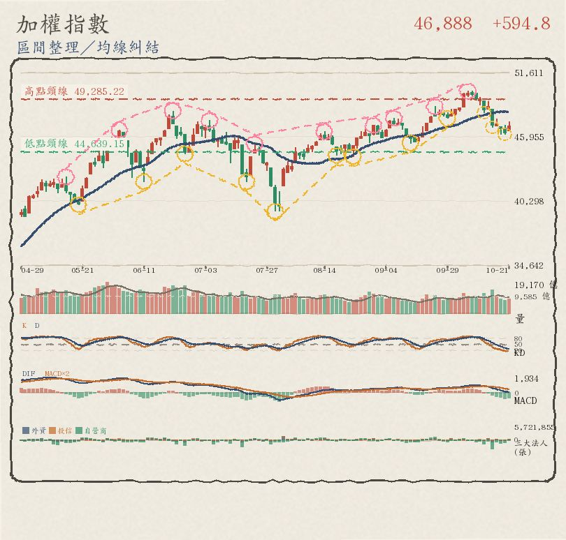
圖說：加權指數日 K（與個股圖相同標記）：黃圈＝轉折低點、粉圈＝轉折高點、虛線小圈＝還沒確認的轉折、藍線＝月線 MA20、水平虛線＝高點／低點頸線。最後一根是資料日當天。
本區塊為公開資料的技術面觀察，不構成投資建議，
不報牌、不預測、不下買賣決策。成交金額為集中市場總成交金額（含 ETF／權證），
與頁首摘要的「上市個股成交金額」口徑不同。標籤是統計，不是評分、也不是推薦。
上市 vs 上櫃（同期快篩）
加權 +1.28% vs 櫃買 +1.94%（同向） → 同向
（兩個市場分開寫，不合併成一個數字；櫃買為 TPEX 公開資料）
櫃買歷史：TPEX 逐日回補 130 根；來源：櫃買中心 www/zh-tw/indexInfo/sectinx（逐日，官方；OpenAPI tpex_index 只回當月）
（TPEX OpenAPI 只回當月，故逐日回補；歷史不足就不算該條均線並標「資料不足」，不用錯數字）
近 20 個交易日大盤狀態回溯（最新在上）（點開看逐日主狀態／量比／量價象限）
用同一支程式回算最近 20 個交易日（主狀態 S1~S8 與量比 20 皆為當日收盤當時的判定，
不是事後調整）；量比 20 未公布的日子寫「—」。
好條件最多的（前 10）
不好條件最多的（前 10）
本期市場狀態：多頭（等權指數在 60 日均線之上）（多頭期間：趨勢類條件（站上月線／月線向上／突破頸線…）有效，回測後 20 日差距最大 +2.09%（t=12.2））
好條件（7 項）：站上月線、月線向上、底底高、頭頭高、突破頸線、外資買超、量價攻擊（收紅＋大量）。
不好條件（6 項）：在月線之下、月線下彎、相對大盤弱、今日下跌、收盤跌破前一日低點、外資賣超。
兩邊都是同一組資料（日線結構＋當日收盤量價籌碼）算出來的「符合項目數」，只是方向相反；
條件數不是評分、也不是推薦，不構成投資建議。
上升趨勢：底底高 ＋ 頭頭高（10 上市 7／上櫃 3）
量價攻擊（收紅＋大量）（23 上市 20／上櫃 3）
跌破前低（線型轉弱）（19 上市 16／上櫃 3）
逐檔分析（70 檔）
區間或轉弱 成交金額 655.16 億・全榜第 1 名（上市第 1 名）
好條件 2/7：月線向上、量價攻擊（收紅＋大量）
不好條件 3/6：在月線之下、相對大盤弱、外資賣超
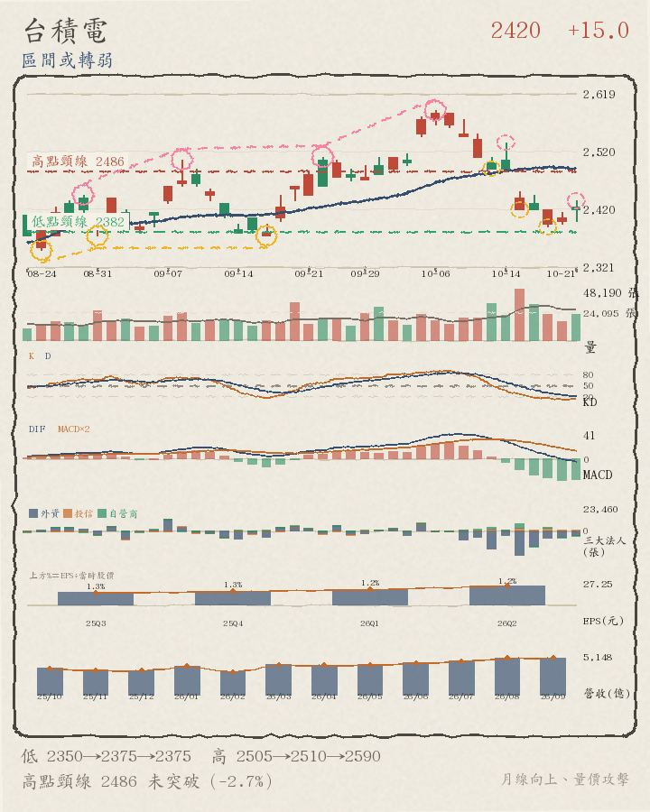
今天收紅、跌破月線 2490，離高點頸線 2486 還差 2.7%，轉折還沒走出明顯方向。
- 月線位置：收盤 2420 在月線 2490 之下；5 日線 2421 也在月線之下（短均在下）；月線向上、5 日線走平或向下
- 量能：成交量是 20 日均量的 1.02 倍，跟 20 日均量差不多
- 關鍵價位：高點頸線 2486 還沒突破，差 2.7%；最近轉折高點 2590（低於 6.6%）；最近轉折低點 2375（高於 1.9%）
- 轉折結構：低點 2350、2375、2375 與高點 2505、2510、2590 都沒有明顯遞增，屬於區間震盪或轉弱；還沒確認的轉折低點 10-15 2420、10-19 2390；還沒確認的轉折高點 10-14 2535、10-21 2435（圖上虛線小圈）
高點墊高、底部不穩 成交金額 393.37 億・全榜第 2 名（上市第 2 名）
好條件 5/7：站上月線、月線向上、頭頭高、外資買超、量價攻擊（收紅＋大量）
不好條件 0/6：無
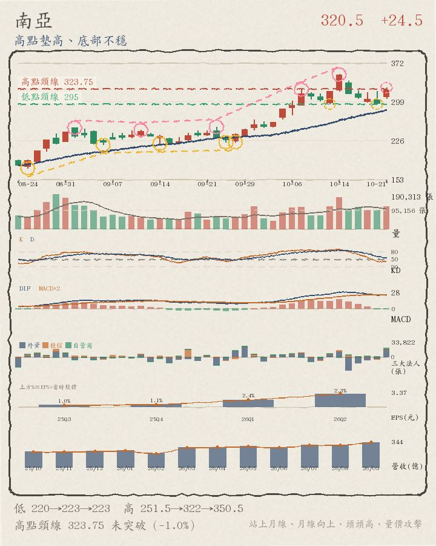
今天帶量收紅、站上月線 283.425，離高點頸線 323.75 還差 1.0%，高點還在墊高（但底部沒同步墊高）。
- 月線位置：收盤 320.5 在月線 283.425 之上；5 日線 308.3 也在月線之上（短均在上）；月線向上、5 日線走平或向下
- 量能：成交量是 20 日均量的 1.37 倍，比 20 日均量大不少；收紅又量增，量價配合
- 關鍵價位：高點頸線 323.75 還沒突破，差 1.0%；最近轉折高點 350.5（低於 8.6%）；最近轉折低點 223（高於 43.7%）
- 轉折結構：高點 251.5、322、350.5 墊高 39.4%（頭頭高），但低點 220.5、223、223 沒有同步墊高；還沒確認的轉折低點 10-13 295、10-20 295；還沒確認的轉折高點 10-21 325.5（圖上虛線小圈）
底部墊高、未過前高 成交金額 391.04 億・全榜第 3 名（上市第 3 名）
好條件 1/7：底底高
不好條件 5/6：在月線之下、月線下彎、相對大盤弱、今日下跌、外資賣超
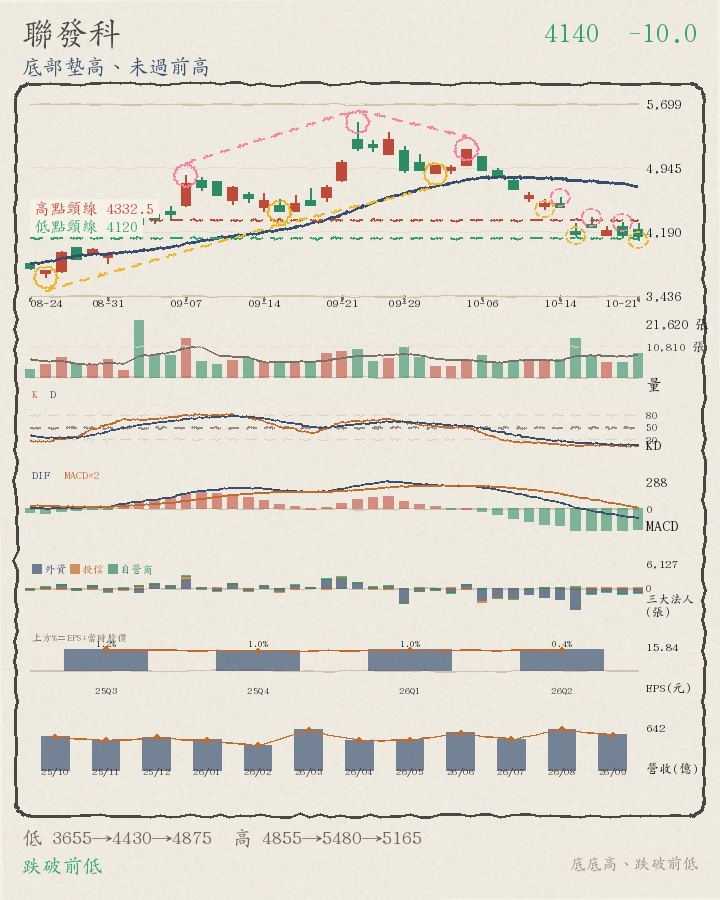
今天帶量收黑、跌破月線 4728.25，跌破前一個轉折低點（高點頸線 4332.5 還在收盤上方），底部還在墊高（但高點沒同步創高）。
- 月線位置：收盤 4140 在月線 4728.25 之下；5 日線 4182 也在月線之下（短均在下）；月線走平或向下、5 日線走平或向下
- 量能：成交量是 20 日均量的 1.22 倍，比 20 日均量大不少；收黑卻量增，量價背離
- 關鍵價位：高點頸線 4332.5 還沒突破、還在收盤上方 4.4%；最近轉折高點 5165（低於 19.8%）；最近轉折低點 4875（低於 15.1%）
- 轉折結構：低點 3655、4430、4875 墊高 33.4%（底底高），但高點 4855、5480、5165 沒有同步創高；還沒確認的轉折低點 10-15 4145、10-21 4095；還沒確認的轉折高點 10-16 4360、10-20 4305（圖上虛線小圈）
區間或轉弱 成交金額 216.63 億・全榜第 5 名（上市第 4 名）
好條件 4/7：站上月線、月線向上、外資買超、量價攻擊（收紅＋大量）
不好條件 0/6：無
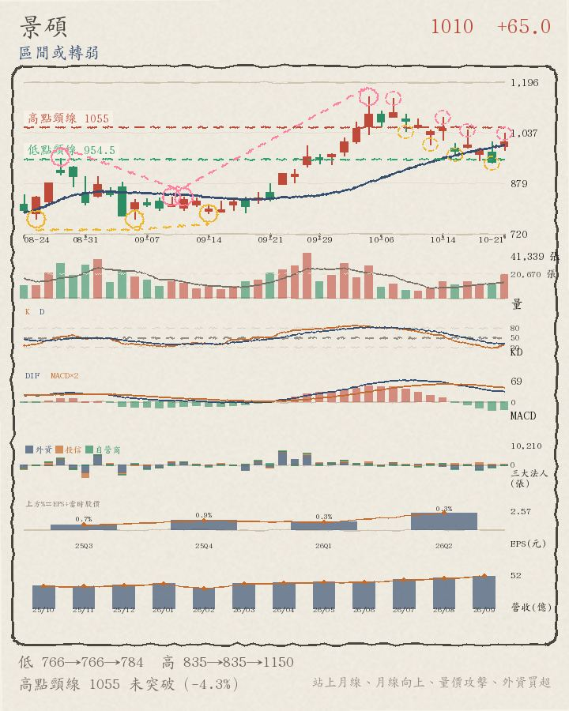
今天帶量收紅、站上月線 999.75，離高點頸線 1055 還差 4.3%，轉折還沒走出明顯方向。
- 月線位置：收盤 1010 在月線 999.75 之上；5 日線 983.2 也在月線之下（短均在下）；月線向上、5 日線走平或向下
- 量能：成交量是 20 日均量的 1.18 倍，比 20 日均量大不少；收紅又量增，量價配合
- 關鍵價位：高點頸線 1055 還沒突破，差 4.3%；最近轉折高點 1150（低於 12.2%）；最近轉折低點 784（高於 28.8%）
- 轉折結構：低點 766、766、784 與高點 835、835、1150 都沒有明顯遞增，屬於區間震盪或轉弱；還沒確認的轉折低點 10-15 968、10-20 941；還沒確認的轉折高點 10-16 1045、10-21 1035（圖上虛線小圈）
高點墊高、底部不穩 成交金額 211.97 億・全榜第 6 名（上市第 5 名）
好條件 3/7：月線向上、頭頭高、量價攻擊（收紅＋大量）
不好條件 2/6：在月線之下、外資賣超
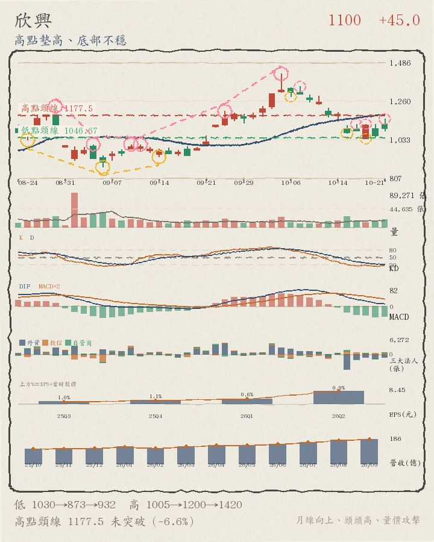
今天帶量收紅、跌破月線 1180.75，離高點頸線 1177.5 還差 6.6%，高點還在墊高（但底部沒同步墊高）。
- 月線位置：收盤 1100 在月線 1180.75 之下；5 日線 1088 也在月線之下（短均在下）；月線向上、5 日線走平或向下
- 量能：成交量是 20 日均量的 1.30 倍，比 20 日均量大不少；收紅又量增，量價配合
- 關鍵價位：高點頸線 1177.5 還沒突破，差 6.6%；最近轉折高點 1420（低於 22.5%）；最近轉折低點 932（高於 18.0%）
- 轉折結構：高點 1005、1200、1420 墊高 41.3%（頭頭高），但低點 1030、873、932 沒有同步墊高；還沒確認的轉折低點 10-15 1070、10-19 1040；還沒確認的轉折高點 10-19 1125、10-21 1155（圖上虛線小圈）
底部墊高、未過前高 成交金額 199.19 億・全榜第 8 名（上市第 6 名）
好條件 5/7：站上月線、月線向上、底底高、外資買超、量價攻擊（收紅＋大量）
不好條件 0/6：無
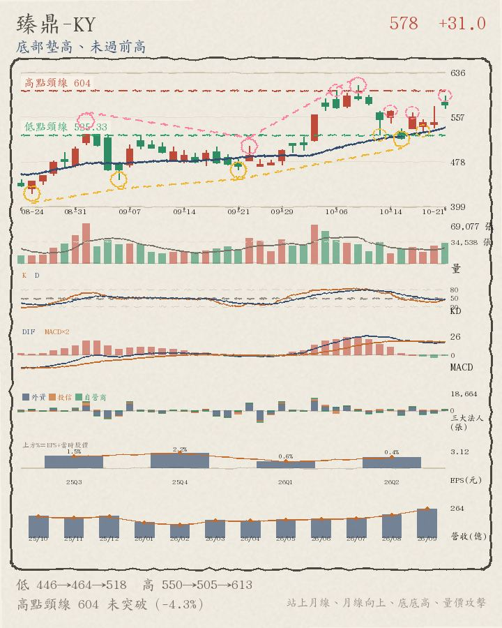
今天收紅、站上月線 538.45，離高點頸線 604 還差 4.3%，底部還在墊高（但高點沒同步創高）。
- 月線位置：收盤 578 在月線 538.45 之上；5 日線 549.6 也在月線之上（短均在上）；月線向上、5 日線走平或向下
- 量能：成交量是 20 日均量的 1.04 倍，跟 20 日均量差不多
- 關鍵價位：高點頸線 604 還沒突破，差 4.3%；最近轉折高點 613（低於 5.7%）；最近轉折低點 518（高於 11.6%）
- 轉折結構：低點 446.5、463.5、518 墊高 16.0%（底底高），但高點 550、505、613 沒有同步創高；還沒確認的轉折低點 10-13 525、10-19 533；還沒確認的轉折高點 10-16 565、10-21 595（圖上虛線小圈）
高點墊高、底部不穩 成交金額 187.1 億・全榜第 9 名（上市第 7 名）
好條件 2/7：頭頭高、量價攻擊（收紅＋大量）
不好條件 4/6：在月線之下、月線下彎、相對大盤弱、外資賣超
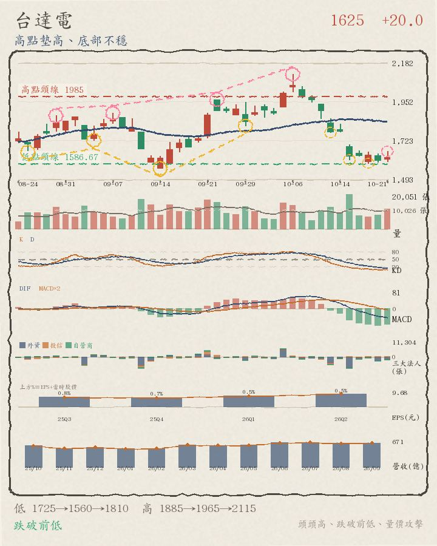
今天帶量收紅、跌破月線 1835.25，跌破前一個轉折低點（高點頸線 1985 還在收盤上方），高點還在墊高（但底部沒同步墊高）。
- 月線位置：收盤 1625 在月線 1835.25 之下；5 日線 1627 也在月線之下（短均在下）；月線走平或向下、5 日線走平或向下
- 量能：成交量是 20 日均量的 1.06 倍，比 20 日均量大一些；收紅又量增，量價配合
- 關鍵價位：高點頸線 1985 還沒突破、還在收盤上方 18.1%；最近轉折高點 2115（低於 23.2%）；最近轉折低點 1810（低於 10.2%）
- 轉折結構：高點 1885、1965、2115 墊高 12.2%（頭頭高），但低點 1725、1560、1810 沒有同步墊高；還沒確認的轉折低點 10-15 1610、10-19 1590；還沒確認的轉折高點 10-21 1660（圖上虛線小圈）
區間或轉弱 成交金額 186.51 億・全榜第 10 名（上市第 8 名）
好條件 2/7：月線向上、外資買超
不好條件 1/6：在月線之下
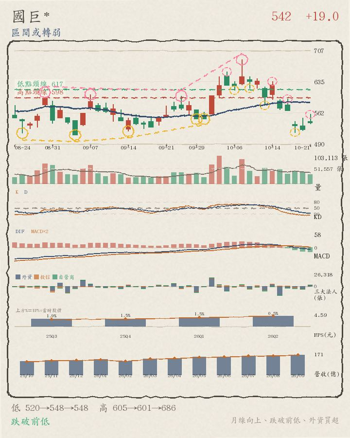
今天收紅、但成交量比平均少、跌破月線 586.95，跌破前一個轉折低點（高點頸線 598 還在收盤上方），轉折還沒走出明顯方向。
- 月線位置：收盤 542 在月線 586.95 之下；5 日線 547.8 也在月線之下（短均在下）；月線向上、5 日線走平或向下
- 量能：成交量是 20 日均量的 0.73 倍，比 20 日均量少很多；收紅但量縮，量價背離
- 關鍵價位：高點頸線 598 還沒突破、還在收盤上方 9.4%；最近轉折高點 686（低於 21.0%）；最近轉折低點 548（低於 1.1%）
- 轉折結構：低點 520、548、548 與高點 605、601、686 都沒有明顯遞增，屬於區間震盪或轉弱；還沒確認的轉折低點 10-13 580、10-19 517；還沒確認的轉折高點 10-16 595、10-21 559（圖上虛線小圈）
區間或轉弱 成交金額 167.17 億・全榜第 11 名（上市第 9 名）
好條件 3/7：月線向上、外資買超、量價攻擊（收紅＋大量）
不好條件 1/6：在月線之下
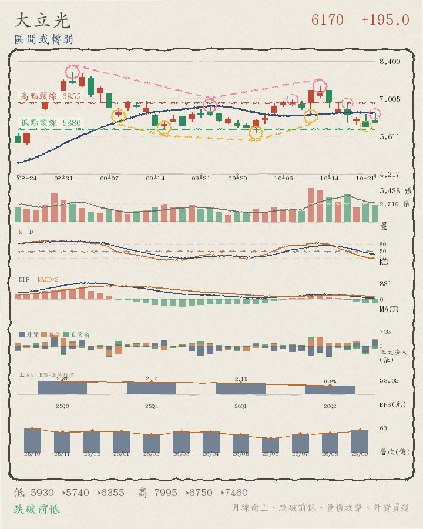
今天收紅、跌破月線 6483.25，跌破前一個轉折低點（高點頸線 6855 還在收盤上方），轉折還沒走出明顯方向。
- 月線位置：收盤 6170 在月線 6483.25 之下；5 日線 6279 也在月線之下（短均在下）；月線向上、5 日線走平或向下
- 量能：成交量是 20 日均量的 1.04 倍，跟 20 日均量差不多
- 關鍵價位：高點頸線 6855 還沒突破、還在收盤上方 10.0%；最近轉折高點 7460（低於 17.3%）；最近轉折低點 6355（低於 2.9%）
- 轉折結構：低點 5930、5740、6355 與高點 7995、6750、7460 都沒有明顯遞增，屬於區間震盪或轉弱；還沒確認的轉折低點 10-20 5970；還沒確認的轉折高點 10-16 6845、10-21 6450（圖上虛線小圈）
上升趨勢（底底高＋頭頭高） 成交金額 162.77 億・全榜第 12 名（上市第 10 名）
好條件 4/7：月線向上、底底高、頭頭高、量價攻擊（收紅＋大量）
不好條件 2/6：在月線之下、外資賣超
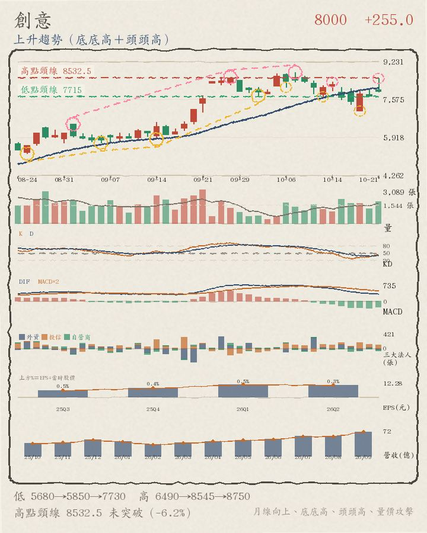
今天帶量收紅、跌破月線 8081.25，離高點頸線 8532.5 還差 6.2%，轉折結構仍是底底高＋頭頭高。
- 月線位置：收盤 8000 在月線 8081.25 之下；5 日線 7745 也在月線之下（短均在下）；月線向上、5 日線走平或向下
- 量能：成交量是 20 日均量的 1.39 倍，比 20 日均量大不少；收紅又量增，量價配合
- 關鍵價位：高點頸線 8532.5 還沒突破，差 6.2%；最近轉折高點 8750（低於 8.6%）；最近轉折低點 7730（高於 3.5%）
- 轉折結構：低點 5680、5850、7730 一路墊高 36.1%、高點 6490、8545、8750 也一路墊高 34.8%，是底底高＋頭頭高；還沒確認的轉折低點 10-13 7700、10-19 7065；還沒確認的轉折高點 10-14 8345、10-21 8490（圖上虛線小圈）
剛突破前高 成交金額 157.06 億・全榜第 13 名（上市第 11 名）
好條件 5/7：站上月線、月線向上、頭頭高、外資買超、量價攻擊（收紅＋大量）
不好條件 0/6：無
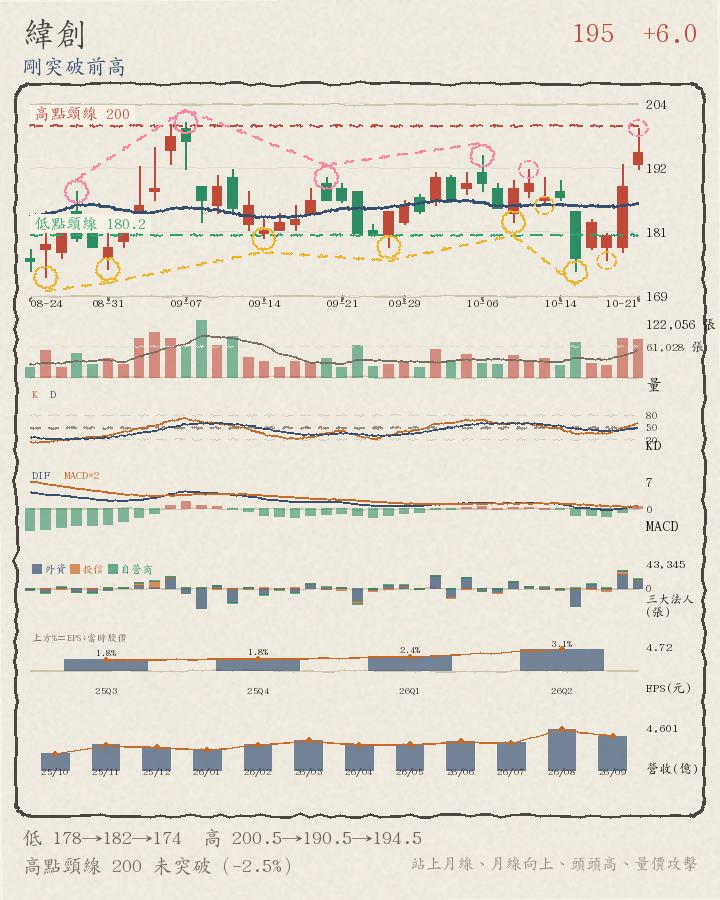
今天帶量收紅、站上月線 185.85，離高點頸線 200 還差 2.5%，高點還在墊高（但底部沒同步墊高）。
- 月線位置：收盤 195 在月線 185.85 之上；5 日線 184.5 也在月線之下（短均在下）；月線向上、5 日線走平或向下
- 量能：成交量是 20 日均量的 2.07 倍，比 20 日均量大不少；收紅又量增，量價配合
- 關鍵價位：高點頸線 200 還沒突破，差 2.5%；最近轉折高點 194.5（高於 0.3%）；最近轉折低點 173.5（高於 12.4%）
- 轉折結構：高點 200.5、190.5、194.5 墊高 2.6%（頭頭高），但低點 178、182.5、173.5 沒有同步墊高；還沒確認的轉折低點 10-13 185.5、10-19 175.5；還沒確認的轉折高點 10-12 192、10-21 199.5（圖上虛線小圈）
底部墊高、突破前高 成交金額 155.59 億・全榜第 14 名（上市第 12 名）
好條件 4/7：站上月線、月線向上、底底高、頭頭高
不好條件 4/6：相對大盤弱、今日下跌、收盤跌破前一日低點、外資賣超
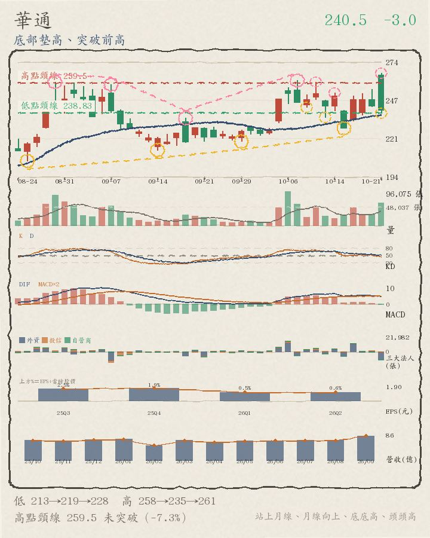
今天帶量收黑、站上月線 237.1，離高點頸線 259.5 還差 7.3%，轉折結構仍是底底高＋頭頭高。
- 月線位置：收盤 240.5 在月線 237.1 之上；5 日線 241.6 也在月線之上（短均在上）；月線向上、5 日線走平或向下
- 量能：成交量是 20 日均量的 2.16 倍，比 20 日均量大不少；收黑卻量增，量價背離
- 關鍵價位：高點頸線 259.5 還沒突破，差 7.3%；最近轉折高點 261（低於 7.9%）；最近轉折低點 228（高於 5.5%）
- 轉折結構：低點 213、219、228 一路墊高 7.0%、高點 258、235、261 也一路墊高 1.9%，是底底高＋頭頭高；還沒確認的轉折低點 10-13 235.5、10-21 238.5；還沒確認的轉折高點 10-14 252.5、10-21 266（圖上虛線小圈）
區間或轉弱 成交金額 147.71 億・全榜第 15 名（上市第 13 名）
好條件 1/7：月線向上
不好條件 5/6：在月線之下、相對大盤弱、今日下跌、收盤跌破前一日低點、外資賣超
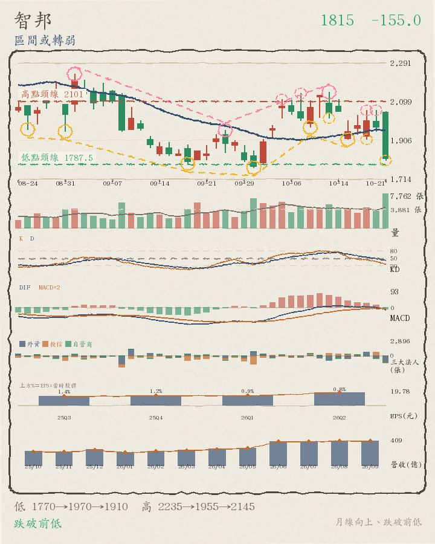
今天帶量收黑、跌破月線 1957，跌破前一個轉折低點（高點頸線 2101 還在收盤上方），轉折還沒走出明顯方向。
- 月線位置：收盤 1815 在月線 1957 之下；5 日線 1944 也在月線之下（短均在下）；月線向上、5 日線走平或向下
- 量能：成交量是 20 日均量的 1.77 倍，比 20 日均量大不少；收黑卻量增，量價背離
- 關鍵價位：高點頸線 2101 還沒突破、還在收盤上方 13.6%；最近轉折高點 2145（低於 15.4%）；最近轉折低點 1910（低於 5.0%）
- 轉折結構：低點 1770、1970、1910 與高點 2235、1955、2145 都沒有明顯遞增，屬於區間震盪或轉弱；還沒確認的轉折低點 10-19 1910、10-21 1805；還沒確認的轉折高點 10-19 2055、10-20 2055（圖上虛線小圈）
區間或轉弱 成交金額 143.42 億・全榜第 16 名（上市第 14 名）
好條件 2/7：站上月線、月線向上
不好條件 4/6：相對大盤弱、今日下跌、收盤跌破前一日低點、外資賣超
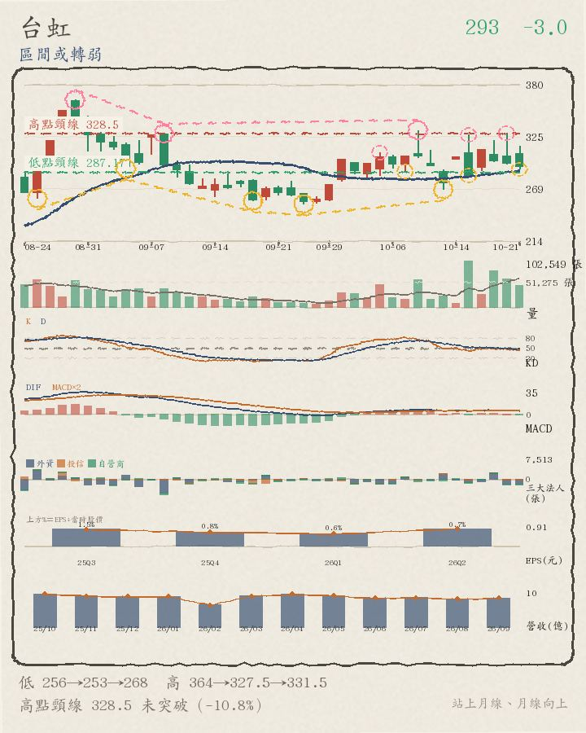
今天帶量收黑、站上月線 288.35，離高點頸線 328.5 還差 10.8%，轉折還沒走出明顯方向。
- 月線位置：收盤 293 在月線 288.35 之上；5 日線 296.6 也在月線之上（短均在上）；月線向上、5 日線走平或向下
- 量能：成交量是 20 日均量的 1.54 倍，比 20 日均量大不少；收黑卻量增，量價背離
- 關鍵價位：高點頸線 328.5 還沒突破，差 10.8%；最近轉折高點 331.5（低於 11.6%）；最近轉折低點 268.5（高於 9.1%）
- 轉折結構：低點 256.5、253、268.5 與高點 364、327.5、331.5 都沒有明顯遞增，屬於區間震盪或轉弱；還沒確認的轉折低點 10-15 283.5、10-21 290；還沒確認的轉折高點 10-15 326.5、10-20 328.5（圖上虛線小圈）
區間或轉弱 成交金額 139.26 億・全榜第 17 名（上市第 15 名）
好條件 1/7：外資買超
不好條件 2/6：在月線之下、月線下彎
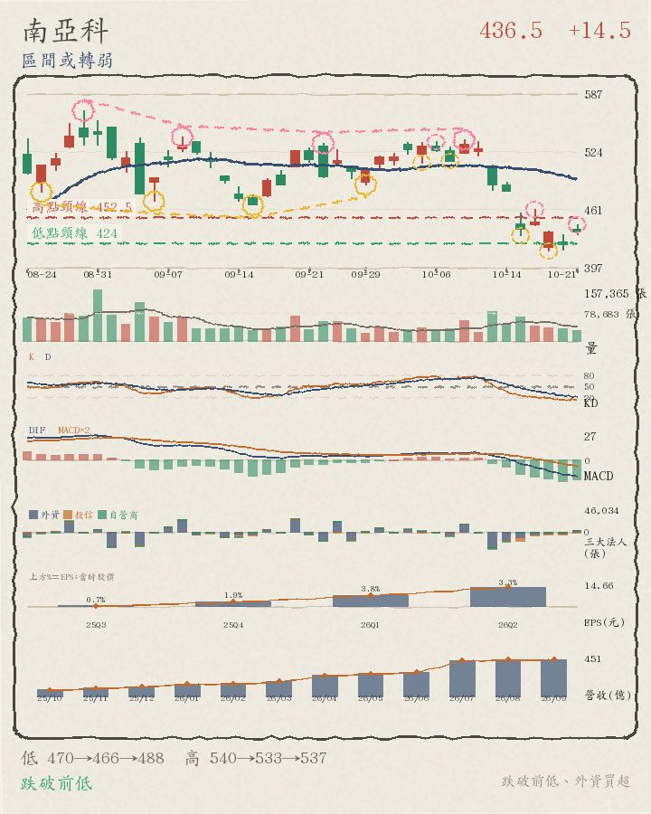
今天收紅、但成交量比平均少、跌破月線 493.95，跌破前一個轉折低點（高點頸線 452.5 還在收盤上方），轉折還沒走出明顯方向。
- 月線位置：收盤 436.5 在月線 493.95 之下；5 日線 436.3 也在月線之下（短均在下）；月線走平或向下、5 日線走平或向下
- 量能：成交量是 20 日均量的 0.68 倍，比 20 日均量少很多；收紅但量縮，量價背離
- 關鍵價位：高點頸線 452.5 還沒突破、還在收盤上方 3.5%；最近轉折高點 537（低於 18.7%）；最近轉折低點 488（低於 10.6%）
- 轉折結構：低點 470、465.5、488 與高點 540、533、537 都沒有明顯遞增，屬於區間震盪或轉弱；還沒確認的轉折低點 10-15 432.5、10-19 415.5；還沒確認的轉折高點 10-16 461、10-21 444（圖上虛線小圈）
區間或轉弱 成交金額 137.97 億・全榜第 18 名（上市第 16 名）
好條件 2/7：月線向上、量價攻擊（收紅＋大量）
不好條件 3/6：在月線之下、相對大盤弱、外資賣超
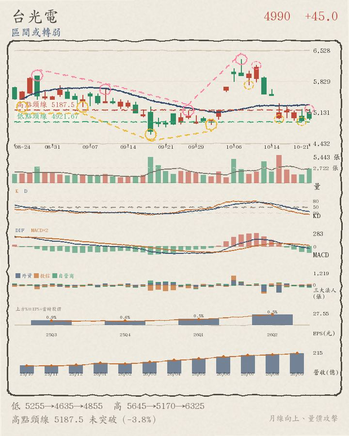
今天帶量收紅、跌破月線 5302.25，離高點頸線 5187.5 還差 3.8%，轉折還沒走出明顯方向。
- 月線位置：收盤 4990 在月線 5302.25 之下；5 日線 5069 也在月線之下（短均在下）；月線向上、5 日線走平或向下
- 量能：成交量是 20 日均量的 1.13 倍，比 20 日均量大一些；收紅又量增，量價配合
- 關鍵價位：高點頸線 5187.5 還沒突破，差 3.8%；最近轉折高點 6325（低於 21.1%）；最近轉折低點 4855（高於 2.8%）
- 轉折結構：低點 5255、4635、4855 與高點 5645、5170、6325 都沒有明顯遞增，屬於區間震盪或轉弱；還沒確認的轉折低點 10-15 4980、10-20 4930；還沒確認的轉折高點 10-12 6190、10-21 5205（圖上虛線小圈）
底部墊高、未過前高 成交金額 135.35 億・全榜第 19 名（上市第 17 名）
好條件 5/7：站上月線、底底高、突破頸線、外資買超、量價攻擊（收紅＋大量）
不好條件 1/6：月線下彎
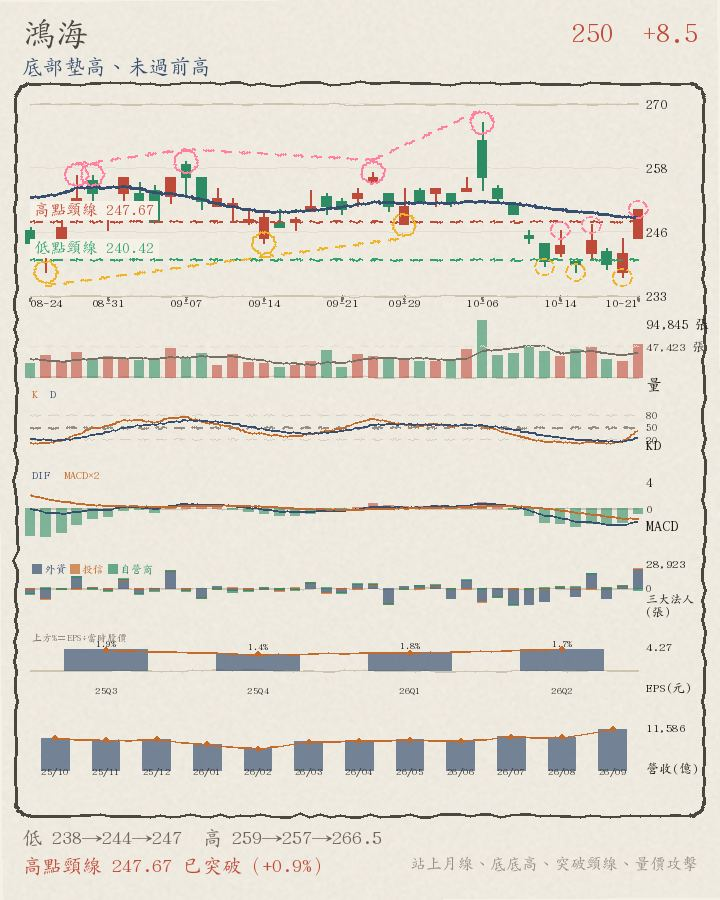
今天帶量收紅、站上月線 248.475，已站上高點頸線 247.67，底部還在墊高（但高點沒同步創高）。
- 月線位置：收盤 250 在月線 248.475 之上；5 日線 242.9 也在月線之下（短均在下）；月線走平或向下、5 日線走平或向下
- 量能：成交量是 20 日均量的 1.41 倍，比 20 日均量大不少；收紅又量增，量價配合
- 關鍵價位：高點頸線 247.67 已站上；最近轉折高點 266.5（低於 6.2%）；最近轉折低點 247（高於 1.2%）
- 轉折結構：低點 238、243.5、247 墊高 3.8%（底底高），但高點 259、257、266.5 沒有同步創高；還沒確認的轉折低點 10-15 238、10-20 237；還沒確認的轉折高點 10-16 247、10-21 250（圖上虛線小圈）
區間或轉弱 成交金額 131.06 億・全榜第 20 名（上市第 18 名）
好條件 1/7：月線向上
不好條件 5/6：在月線之下、相對大盤弱、今日下跌、收盤跌破前一日低點、外資賣超
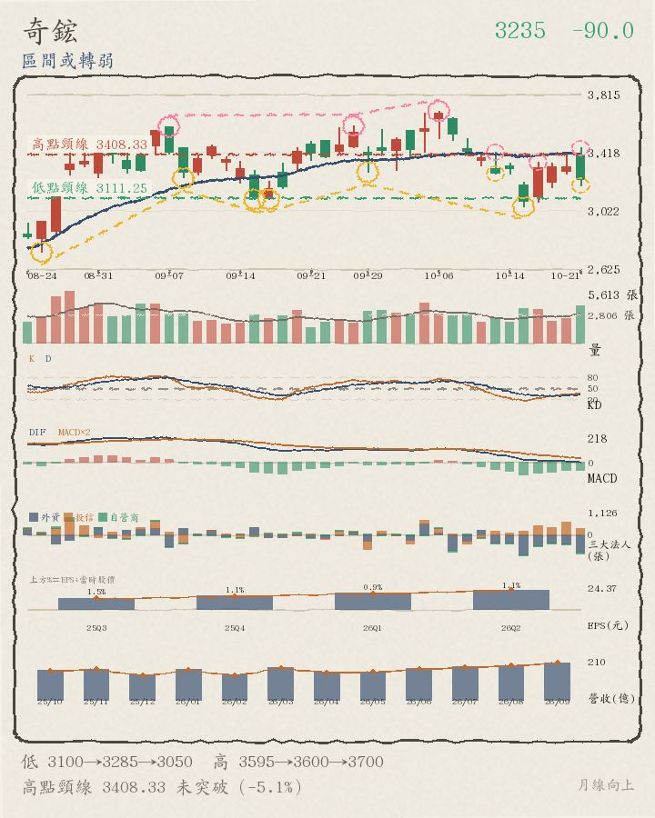
今天帶量收黑、跌破月線 3406.5，離高點頸線 3408.33 還差 5.1%，轉折還沒走出明顯方向。
- 月線位置：收盤 3235 在月線 3406.5 之下；5 日線 3256 也在月線之下（短均在下）；月線向上、5 日線走平或向下
- 量能：成交量是 20 日均量的 1.37 倍，比 20 日均量大不少；收黑卻量增，量價背離
- 關鍵價位：高點頸線 3408.33 還沒突破，差 5.1%；最近轉折高點 3700（低於 12.6%）；最近轉折低點 3050（高於 6.1%）
- 轉折結構：低點 3100、3285、3050 與高點 3595、3600、3700 都沒有明顯遞增，屬於區間震盪或轉弱；還沒確認的轉折低點 10-13 3275、10-21 3195；還沒確認的轉折高點 10-16 3355、10-21 3450（圖上虛線小圈）
高點墊高、底部不穩 成交金額 129.13 億・全榜第 21 名（上市第 19 名）
好條件 4/7：站上月線、月線向上、頭頭高、量價攻擊（收紅＋大量）
不好條件 1/6：外資賣超
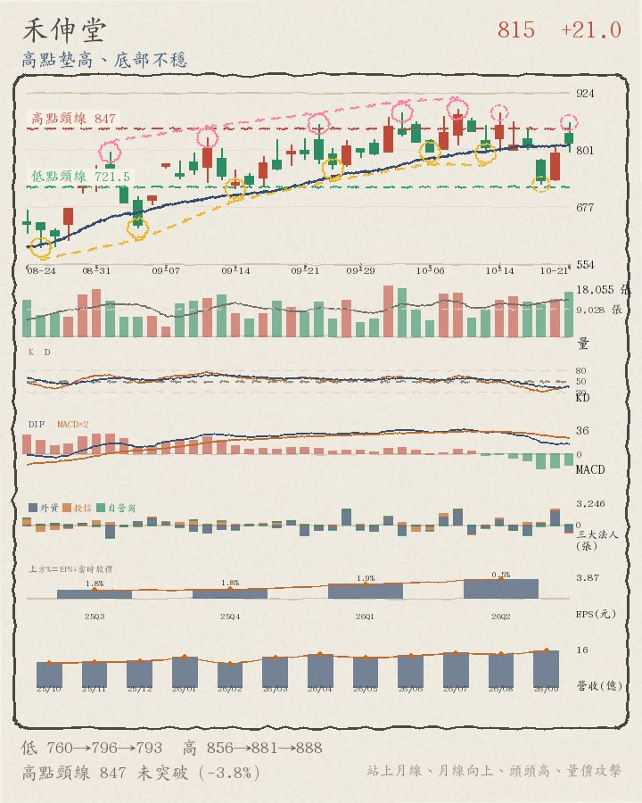
今天帶量收紅、站上月線 810.65，離高點頸線 847 還差 3.8%，高點還在墊高（但底部沒同步墊高）。
- 月線位置：收盤 815 在月線 810.65 之上；5 日線 792.2 也在月線之下（短均在下）；月線向上、5 日線走平或向下
- 量能：成交量是 20 日均量的 1.42 倍，比 20 日均量大不少；收紅又量增，量價配合
- 關鍵價位：高點頸線 847 還沒突破，差 3.8%；最近轉折高點 888（低於 8.2%）；最近轉折低點 793（高於 2.8%）
- 轉折結構：高點 856、881、888 墊高 3.7%（頭頭高），但低點 760、796、793 沒有同步墊高；還沒確認的轉折低點 10-19 726；還沒確認的轉折高點 10-14 880、10-21 859（圖上虛線小圈）
剛突破前高 成交金額 124.88 億・全榜第 22 名（上市第 20 名）
好條件 4/7：站上月線、月線向上、頭頭高、外資買超
不好條件 2/6：相對大盤弱、今日下跌
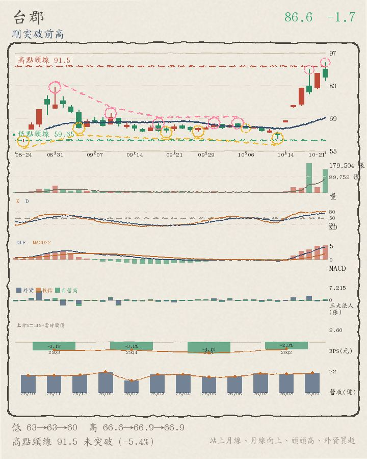
今天帶量收黑、站上月線 69.225，離高點頸線 91.5 還差 5.4%，高點還在墊高（但底部沒同步墊高）。
- 月線位置：收盤 86.6 在月線 69.225 之上；5 日線 82.36 也在月線之上（短均在上）；月線向上、5 日線向上
- 量能：成交量是 20 日均量的 9.08 倍，比 20 日均量大不少；收黑卻量增，量價背離
- 關鍵價位：高點頸線 91.5 還沒突破，差 5.4%；最近轉折高點 66.9（高於 29.4%）；最近轉折低點 60.3（高於 43.6%）
- 轉折結構：高點 66.6、66.9、66.9 墊高 39.0%（頭頭高），但低點 63、63.3、60.3 沒有同步墊高；還沒確認的轉折低點 10-06 64.7；還沒確認的轉折高點 10-19 90、10-21 93（圖上虛線小圈）
區間或轉弱 成交金額 119.46 億・全榜第 23 名（上市第 21 名）
好條件 0/7：無
不好條件 5/6：在月線之下、月線下彎、相對大盤弱、今日下跌、外資賣超
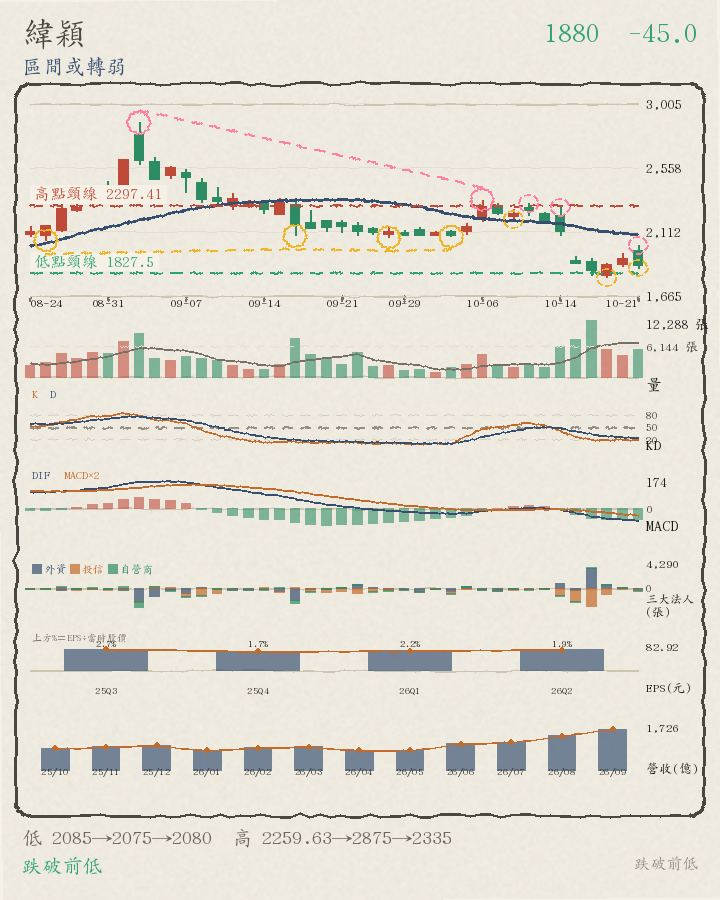
今天帶量收黑、跌破月線 2090.75，跌破前一個轉折低點（高點頸線 2297.41 還在收盤上方），轉折還沒走出明顯方向。
- 月線位置：收盤 1880 在月線 2090.75 之下；5 日線 1888 也在月線之下（短均在下）；月線走平或向下、5 日線走平或向下
- 量能：成交量是 20 日均量的 1.56 倍，比 20 日均量大不少；收黑卻量增，量價背離
- 關鍵價位：高點頸線 2297.41 還沒突破、還在收盤上方 18.2%；最近轉折高點 2335（低於 19.5%）；最近轉折低點 2080（低於 9.6%）
- 轉折結構：低點 2085、2075、2080 與高點 2259.63、2875、2335 都沒有明顯遞增，屬於區間震盪或轉弱；還沒確認的轉折低點 10-19 1795、10-21 1860；還沒確認的轉折高點 10-14 2285、10-21 2020（圖上虛線小圈）
上升趨勢（底底高＋頭頭高） 成交金額 112.48 億・全榜第 24 名（上市第 22 名）
好條件 6/7：站上月線、月線向上、底底高、頭頭高、突破頸線、外資買超
不好條件 0/6：無
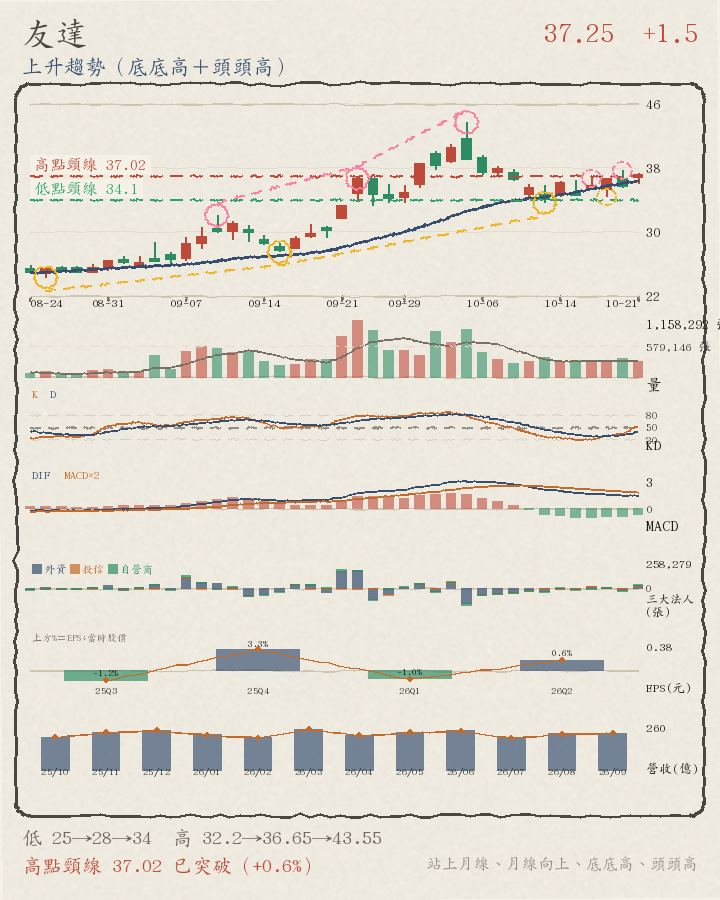
今天收紅、但成交量比平均少、站上月線 36.438，已站上高點頸線 37.02，轉折結構仍是底底高＋頭頭高。
- 月線位置：收盤 37.25 在月線 36.438 之上；5 日線 36.1 也在月線之下（短均在下）；月線向上、5 日線走平或向下
- 量能：成交量是 20 日均量的 0.56 倍，比 20 日均量少很多；收紅但量縮，量價背離
- 關鍵價位：高點頸線 37.02 已站上；最近轉折高點 43.55（低於 14.5%）；最近轉折低點 33.75（高於 10.4%）
- 轉折結構：低點 24.6、27.75、33.75 一路墊高 37.2%、高點 32.2、36.65、43.55 也一路墊高 35.2%，是底底高＋頭頭高；還沒確認的轉折低點 10-19 34.45；還沒確認的轉折高點 10-16 36.75、10-20 37.65（圖上虛線小圈）
底部墊高、突破前高 成交金額 110.2 億・全榜第 25 名（上市第 23 名）
好條件 5/7：站上月線、月線向上、底底高、頭頭高、外資買超
不好條件 2/6：相對大盤弱、今日下跌
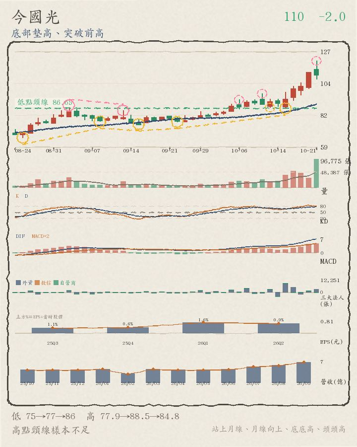
今天帶量收黑、站上月線 89.38，轉折結構仍是底底高＋頭頭高。
- 月線位置：收盤 110 在月線 89.38 之上；5 日線 103.5 也在月線之上（短均在上）；月線向上、5 日線向上
- 量能：成交量是 20 日均量的 5.13 倍，比 20 日均量大不少；收黑卻量增，量價背離
- 關鍵價位：最近轉折高點 84.8（高於 29.7%）；最近轉折低點 86.4（高於 27.3%）
- 轉折結構：低點 75.3、76.9、86.4 一路墊高 14.7%、高點 77.9、88.5、84.8 也一路墊高 41.5%，是底底高＋頭頭高；還沒確認的轉折低點 10-13 86.9；還沒確認的轉折高點 10-12 96.8、10-21 120（圖上虛線小圈）
底部墊高、未過前高 成交金額 105.72 億・全榜第 26 名（上市第 24 名）
好條件 5/7：站上月線、月線向上、底底高、突破頸線、外資買超
不好條件 0/6：無
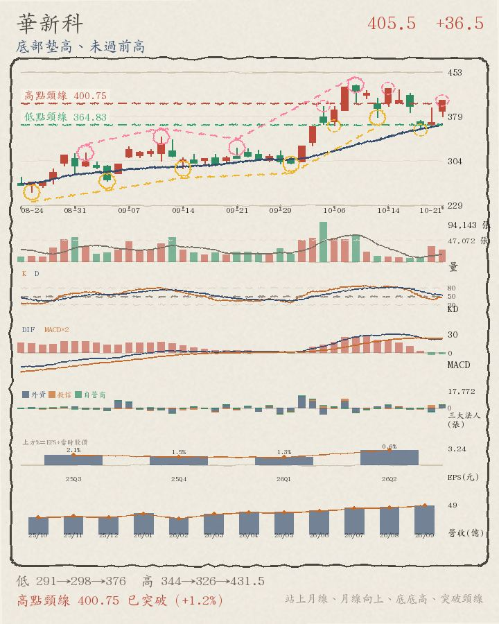
今天收紅、但成交量比平均少、站上月線 365.5，已站上高點頸線 400.75，底部還在墊高（但高點沒同步創高）。
- 月線位置：收盤 405.5 在月線 365.5 之上；5 日線 387.8 也在月線之上（短均在上）；月線向上、5 日線走平或向下
- 量能：成交量是 20 日均量的 0.86 倍，比 20 日均量少一些；收紅但量縮，量價背離
- 關鍵價位：高點頸線 400.75 已站上；最近轉折高點 431.5（低於 6.0%）；最近轉折低點 376.5（高於 7.7%）
- 轉折結構：低點 291、298.5、376.5 墊高 29.4%（底底高），但高點 344、326、431.5 沒有同步創高；還沒確認的轉折低點 10-06 362.5、10-19 355.5；還沒確認的轉折高點 10-14 426、10-21 405.5（圖上虛線小圈）
上升趨勢（底底高＋頭頭高） 成交金額 104.59 億・全榜第 27 名（上市第 25 名）
好條件 6/7：站上月線、月線向上、底底高、頭頭高、外資買超、量價攻擊（收紅＋大量）
不好條件 0/6：無
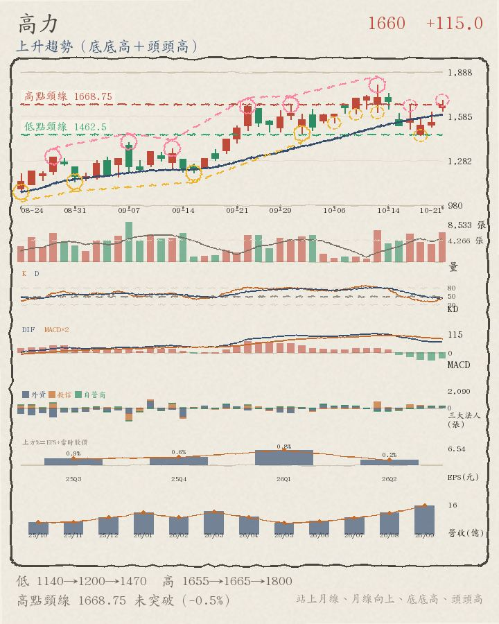
今天帶量收紅、站上月線 1599.25，離高點頸線 1668.75 還差 0.5%，轉折結構仍是底底高＋頭頭高。
- 月線位置：收盤 1660 在月線 1599.25 之上；5 日線 1564 也在月線之下（短均在下）；月線向上、5 日線走平或向下
- 量能：成交量是 20 日均量的 1.73 倍，比 20 日均量大不少；收紅又量增，量價配合
- 關鍵價位：高點頸線 1668.75 還沒突破，差 0.5%；最近轉折高點 1800（低於 7.8%）；最近轉折低點 1470（高於 12.9%）
- 轉折結構：低點 1140、1200、1470 一路墊高 28.9%、高點 1655、1665、1800 也一路墊高 8.8%，是底底高＋頭頭高；還沒確認的轉折低點 10-13 1610、10-19 1455；還沒確認的轉折高點 10-16 1660、10-21 1695（圖上虛線小圈）
區間或轉弱 成交金額 101.56 億・全榜第 30 名（上市第 26 名）
好條件 2/7：站上月線、月線向上
不好條件 2/6：相對大盤弱、外資賣超
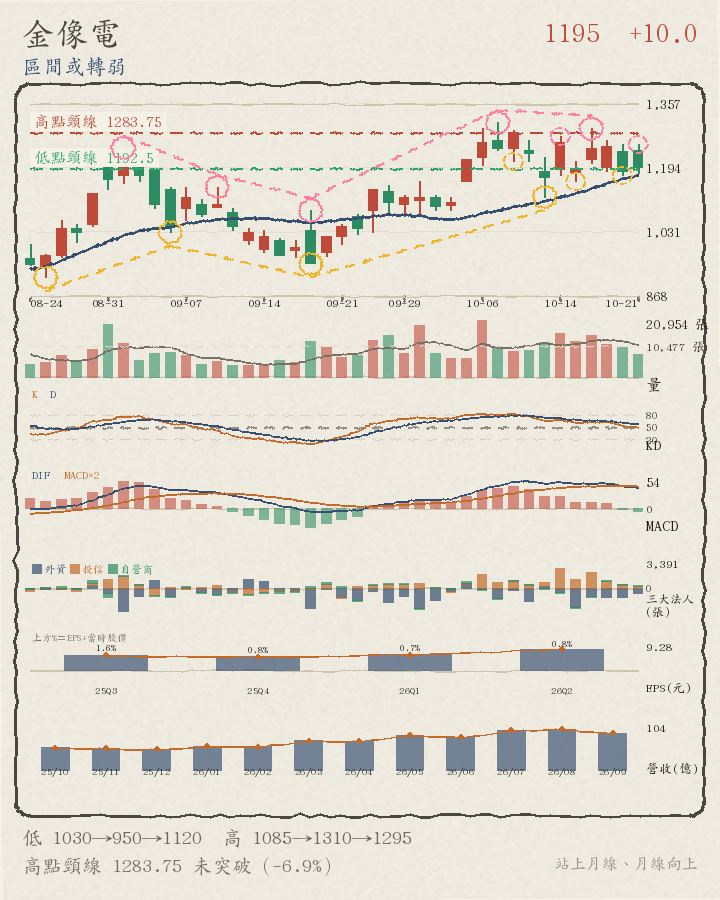
今天收紅、但成交量比平均少、站上月線 1175.25，離高點頸線 1283.75 還差 6.9%，轉折還沒走出明顯方向。
- 月線位置：收盤 1195 在月線 1175.25 之上；5 日線 1213 也在月線之上（短均在上）；月線向上、5 日線走平或向下
- 量能：成交量是 20 日均量的 0.71 倍，比 20 日均量少很多；收紅但量縮，量價背離
- 關鍵價位：高點頸線 1283.75 還沒突破，差 6.9%；最近轉折高點 1295（低於 7.7%）；最近轉折低點 1120（高於 6.7%）
- 轉折結構：低點 1030、950、1120 與高點 1085、1310、1295 都沒有明顯遞增，屬於區間震盪或轉弱；還沒確認的轉折低點 10-15 1160、10-20 1175；還沒確認的轉折高點 10-14 1275、10-21 1255（圖上虛線小圈）
底部墊高、未過前高 成交金額 99.54 億・全榜第 31 名（上市第 27 名）
好條件 2/7：月線向上、底底高
不好條件 2/6：在月線之下、外資賣超
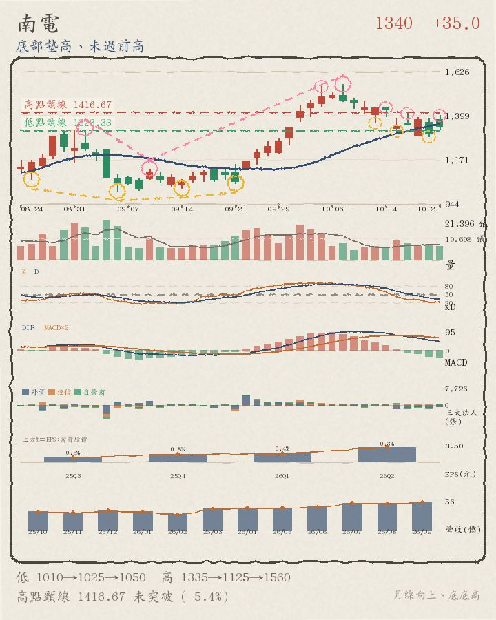
今天收紅、但成交量比平均少、跌破月線 1357.75，離高點頸線 1416.67 還差 5.4%，底部還在墊高（但高點沒同步創高）。
- 月線位置：收盤 1340 在月線 1357.75 之下；5 日線 1345 也在月線之下（短均在下）；月線向上、5 日線走平或向下
- 量能：成交量是 20 日均量的 0.67 倍，比 20 日均量少很多；收紅但量縮，量價背離
- 關鍵價位：高點頸線 1416.67 還沒突破，差 5.4%；最近轉折高點 1560（低於 14.1%）；最近轉折低點 1050（高於 27.6%）
- 轉折結構：低點 1010、1025、1050 墊高 4.0%（底底高），但高點 1335、1125、1560 沒有同步創高；還沒確認的轉折低點 10-15 1320、10-20 1290；還沒確認的轉折高點 10-16 1410、10-21 1400（圖上虛線小圈）
剛突破前高 成交金額 98.58 億・全榜第 32 名（上市第 28 名）
好條件 4/7：站上月線、月線向上、頭頭高、突破頸線
不好條件 3/6：相對大盤弱、今日下跌、外資賣超
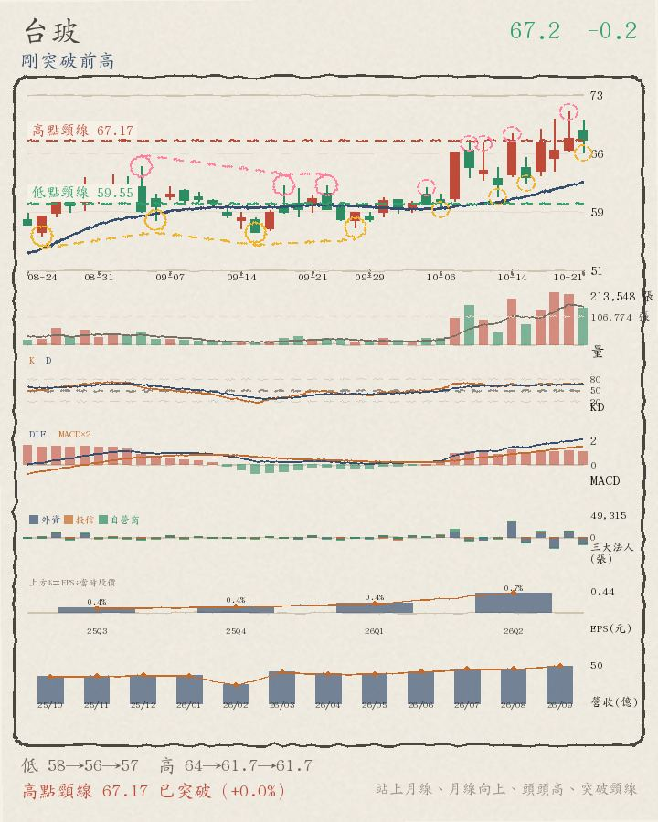
今天帶量收黑、站上月線 62.095，已站上高點頸線 67.17，高點還在墊高（但底部沒同步墊高）。
- 月線位置：收盤 67.2 在月線 62.095 之上；5 日線 66.04 也在月線之上（短均在上）；月線向上、5 日線向上
- 量能：成交量是 20 日均量的 2.03 倍，比 20 日均量大不少；收黑卻量增，量價背離
- 關鍵價位：高點頸線 67.17 已站上；最近轉折高點 61.7（高於 8.9%）；最近轉折低點 56.6（高於 18.7%）
- 轉折結構：高點 64、61.7、61.7 墊高 14.4%（頭頭高），但低點 57.5、56、56.6 沒有同步墊高；還沒確認的轉折低點 10-15 62、10-21 65.6；還沒確認的轉折高點 10-14 67.9、10-20 70.6（圖上虛線小圈）
底部墊高、未過前高 成交金額 95.05 億・全榜第 33 名（上市第 29 名）
好條件 1/7：底底高
不好條件 4/6：在月線之下、月線下彎、相對大盤弱、外資賣超
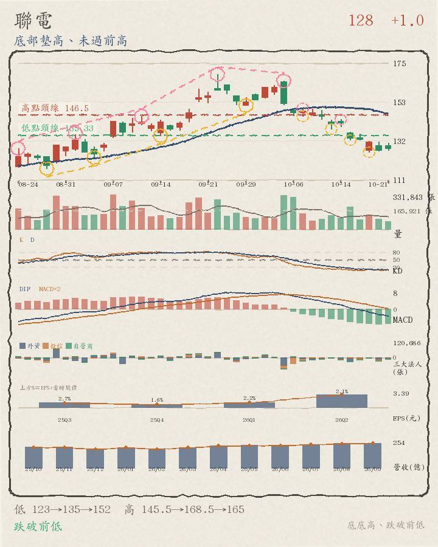
今天收紅、但成交量比平均少、跌破月線 147，跌破前一個轉折低點（高點頸線 146.5 還在收盤上方），底部還在墊高（但高點沒同步創高）。
- 月線位置：收盤 128 在月線 147 之下；5 日線 130.6 也在月線之下（短均在下）；月線走平或向下、5 日線走平或向下
- 量能：成交量是 20 日均量的 0.47 倍，比 20 日均量少很多；收紅但量縮，量價背離
- 關鍵價位：高點頸線 146.5 還沒突破、還在收盤上方 12.6%；最近轉折高點 165（低於 22.4%）；最近轉折低點 151.5（低於 15.5%）
- 轉折結構：低點 123、135、151.5 墊高 23.2%（底底高），但高點 145.5、168.5、165 沒有同步創高；還沒確認的轉折低點 10-15 132.5、10-19 126；還沒確認的轉折高點 10-07 150、10-14 144（圖上虛線小圈）
區間或轉弱 成交金額 87.81 億・全榜第 34 名（上市第 30 名）
好條件 1/7：月線向上
不好條件 4/6：在月線之下、相對大盤弱、今日下跌、外資賣超
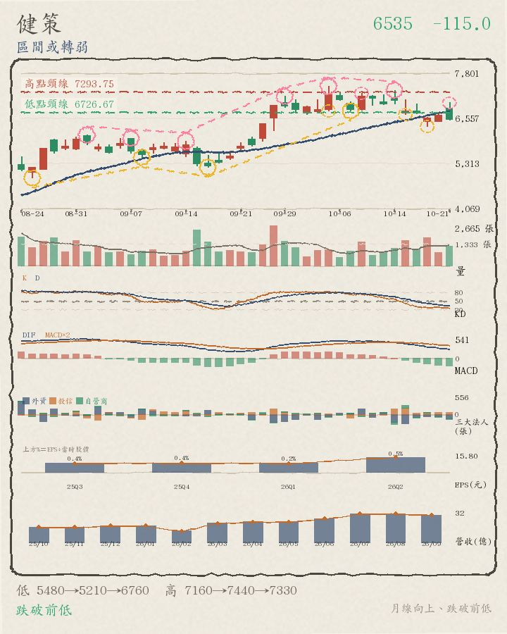
今天帶量收黑、跌破月線 6751.75，跌破前一個轉折低點（高點頸線 7293.75 還在收盤上方），轉折還沒走出明顯方向。
- 月線位置：收盤 6535 在月線 6751.75 之下；5 日線 6648 也在月線之下（短均在下）；月線向上、5 日線走平或向下
- 量能：成交量是 20 日均量的 1.11 倍，比 20 日均量大一些；收黑卻量增，量價背離
- 關鍵價位：高點頸線 7293.75 還沒突破、還在收盤上方 10.4%；最近轉折高點 7330（低於 10.8%）；最近轉折低點 6760（低於 3.3%）
- 轉折結構：低點 5480、5210、6760 與高點 7160、7440、7330 都沒有明顯遞增，屬於區間震盪或轉弱；還沒確認的轉折低點 10-15 6660、10-19 6330；還沒確認的轉折高點 10-08 7245、10-21 6985（圖上虛線小圈）
底部墊高、未過前高 成交金額 79.5 億・全榜第 36 名（上市第 31 名）
好條件 2/7：底底高、外資買超
不好條件 2/6：在月線之下、月線下彎
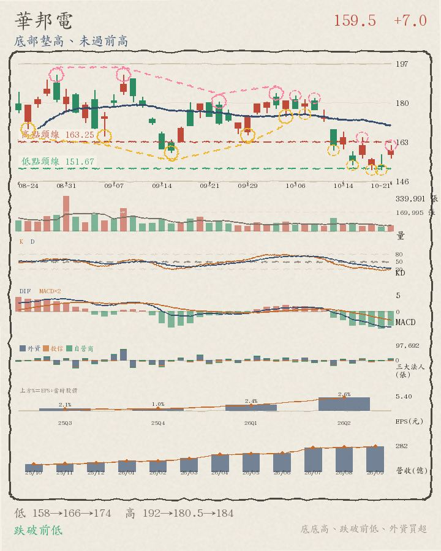
今天收紅、但成交量比平均少、跌破月線 170.05，跌破前一個轉折低點（高點頸線 163.25 還在收盤上方），底部還在墊高（但高點沒同步創高）。
- 月線位置：收盤 159.5 在月線 170.05 之下；5 日線 156.8 也在月線之下（短均在下）；月線走平或向下、5 日線走平或向下
- 量能：成交量是 20 日均量的 0.70 倍，比 20 日均量少很多；收紅但量縮，量價背離
- 關鍵價位：高點頸線 163.25 還沒突破、還在收盤上方 2.3%；最近轉折高點 184（低於 13.3%）；最近轉折低點 174（低於 8.3%）
- 轉折結構：低點 158.5、166、174 墊高 9.8%（底底高），但高點 192、180.5、184 沒有同步創高；還沒確認的轉折低點 10-19 151、10-20 151；還沒確認的轉折高點 10-16 165、10-21 161.5（圖上虛線小圈）
上升趨勢（底底高＋頭頭高） 成交金額 75.02 億・全榜第 37 名（上市第 32 名）
好條件 4/7：月線向上、底底高、頭頭高、外資買超
不好條件 1/6：在月線之下
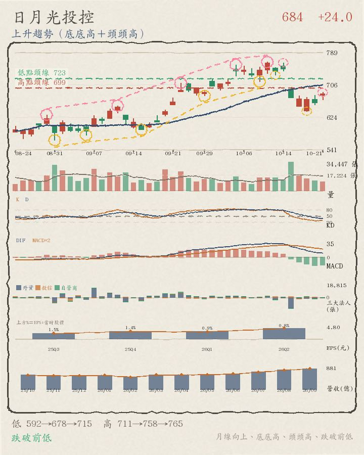
今天收紅、但成交量比平均少、跌破月線 706.5，跌破前一個轉折低點（高點頸線 699 還在收盤上方），轉折結構仍是底底高＋頭頭高。
- 月線位置：收盤 684 在月線 706.5 之下；5 日線 671.6 也在月線之下（短均在下）；月線向上、5 日線走平或向下
- 量能：成交量是 20 日均量的 0.70 倍，比 20 日均量少很多；收紅但量縮，量價背離
- 關鍵價位：高點頸線 699 還沒突破、還在收盤上方 2.1%；最近轉折高點 765（低於 10.6%）；最近轉折低點 715（低於 4.3%）
- 轉折結構：低點 592、678、715 一路墊高 20.8%、高點 711、758、765 也一路墊高 7.6%，是底底高＋頭頭高；還沒確認的轉折低點 10-13 731、10-19 639；還沒確認的轉折高點 10-14 763、10-21 687（圖上虛線小圈）
區間或轉弱 成交金額 63.47 億・全榜第 41 名（上市第 33 名）
好條件 0/7：無
不好條件 5/6：在月線之下、月線下彎、相對大盤弱、今日下跌、外資賣超
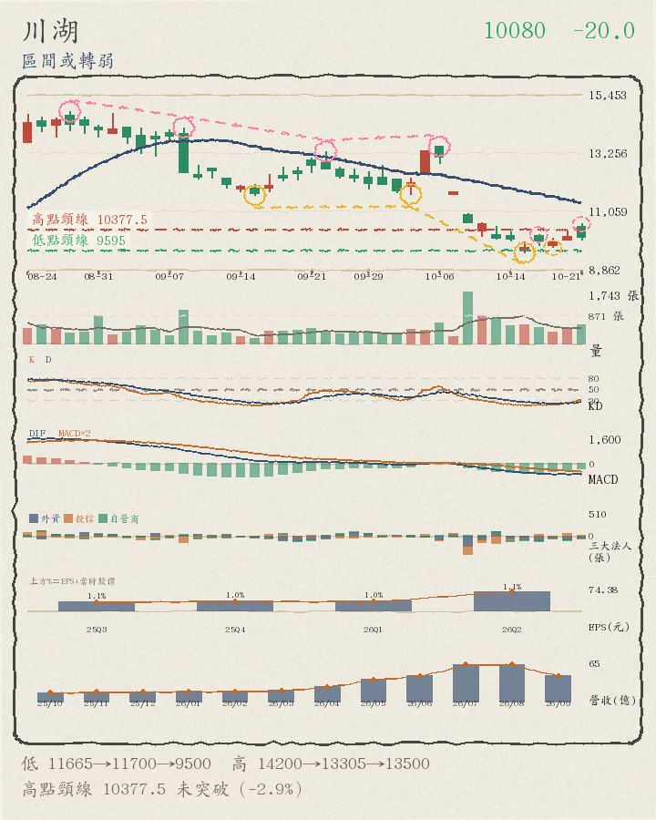
今天帶量收黑、跌破月線 11382，離高點頸線 10377.5 還差 2.9%，轉折還沒走出明顯方向。
- 月線位置：收盤 10080 在月線 11382 之下；5 日線 9955 也在月線之下（短均在下）；月線走平或向下、5 日線走平或向下
- 量能：成交量是 20 日均量的 1.12 倍，比 20 日均量大一些；收黑卻量增，量價背離
- 關鍵價位：高點頸線 10377.5 還沒突破，差 2.9%；最近轉折高點 13500（低於 25.3%）；最近轉折低點 9500（高於 6.1%）
- 轉折結構：低點 11665、11700、9500 與高點 14200、13305、13500 都沒有明顯遞增，屬於區間震盪或轉弱；還沒確認的轉折低點 10-19 9690；還沒確認的轉折高點 10-16 10175、10-21 10580（圖上虛線小圈）
區間或轉弱 成交金額 62.77 億・全榜第 42 名（上市第 34 名）
好條件 2/7：月線向上、外資買超
不好條件 1/6：在月線之下
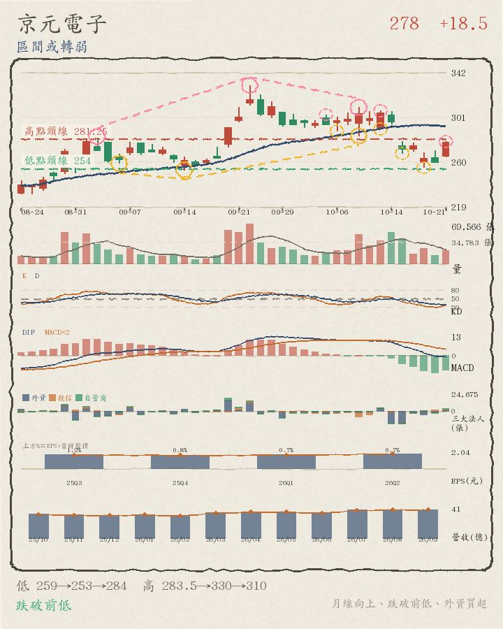
今天收紅、但成交量比平均少、跌破月線 292.975，跌破前一個轉折低點（高點頸線 281.25 還在收盤上方），轉折還沒走出明顯方向。
- 月線位置：收盤 278 在月線 292.975 之下；5 日線 269.6 也在月線之下（短均在下）；月線向上、5 日線走平或向下
- 量能：成交量是 20 日均量的 0.69 倍，比 20 日均量少很多；收紅但量縮，量價背離
- 關鍵價位：高點頸線 281.25 還沒突破、還在收盤上方 1.2%；最近轉折高點 310（低於 10.3%）；最近轉折低點 284（低於 2.1%）
- 轉折結構：低點 259、253、284 與高點 283.5、330、310 都沒有明顯遞增，屬於區間震盪或轉弱；還沒確認的轉折低點 10-15 268、10-19 255；還沒確認的轉折高點 10-13 307、10-21 279（圖上虛線小圈）
上升趨勢（底底高＋頭頭高） 成交金額 58.19 億・全榜第 43 名（上市第 35 名）
好條件 6/7：站上月線、月線向上、底底高、頭頭高、突破頸線、量價攻擊（收紅＋大量）
不好條件 1/6：外資賣超
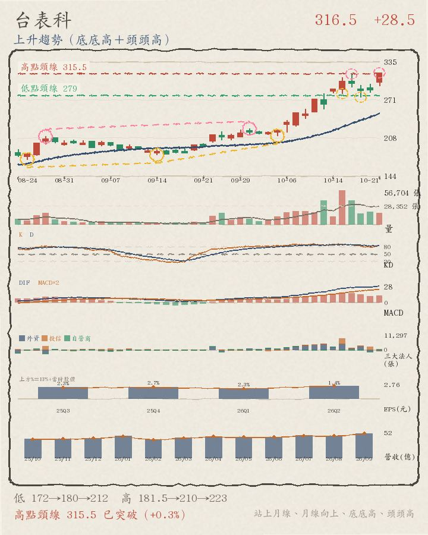
今天帶量收紅、站上月線 248.55，已站上高點頸線 315.5，轉折結構仍是底底高＋頭頭高。
- 月線位置：收盤 316.5 在月線 248.55 之上；5 日線 299.1 也在月線之上（短均在上）；月線向上、5 日線向上
- 量能：成交量是 20 日均量的 1.06 倍，比 20 日均量大一些；收紅又量增，量價配合
- 關鍵價位：高點頸線 315.5 已站上；最近轉折高點 223（高於 41.9%）；最近轉折低點 211.5（高於 49.6%）
- 轉折結構：低點 172、179.5、211.5 一路墊高 23.0%、高點 181.5、210、223 也一路墊高 22.9%，是底底高＋頭頭高；還沒確認的轉折低點 10-15 282、10-19 276；還沒確認的轉折高點 10-16 314.5、10-21 316.5（圖上虛線小圈）
高點墊高、底部不穩 成交金額 54.53 億・全榜第 44 名（上市第 36 名）
好條件 2/7：頭頭高、量價攻擊（收紅＋大量）
不好條件 4/6：在月線之下、月線下彎、相對大盤弱、外資賣超
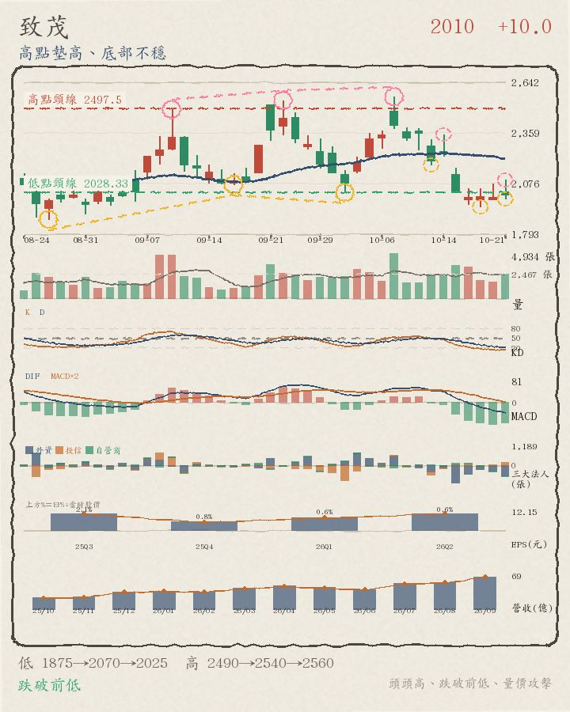
今天收紅、跌破月線 2214.25，跌破前一個轉折低點（高點頸線 2497.5 還在收盤上方），高點還在墊高（但底部沒同步墊高）。
- 月線位置：收盤 2010 在月線 2214.25 之下；5 日線 2008 也在月線之下（短均在下）；月線走平或向下、5 日線走平或向下
- 量能：成交量是 20 日均量的 1.01 倍，跟 20 日均量差不多
- 關鍵價位：高點頸線 2497.5 還沒突破、還在收盤上方 19.5%；最近轉折高點 2560（低於 21.5%）；最近轉折低點 2025（低於 0.7%）
- 轉折結構：高點 2490、2540、2560 墊高 2.8%（頭頭高），但低點 1875、2070、2025 沒有同步墊高；還沒確認的轉折低點 10-19 1945、10-21 1990；還沒確認的轉折高點 10-14 2350、10-21 2095（圖上虛線小圈）
高點墊高、底部不穩 成交金額 54.07 億・全榜第 45 名（上市第 37 名）
好條件 1/7：頭頭高
不好條件 3/6：在月線之下、月線下彎、外資賣超
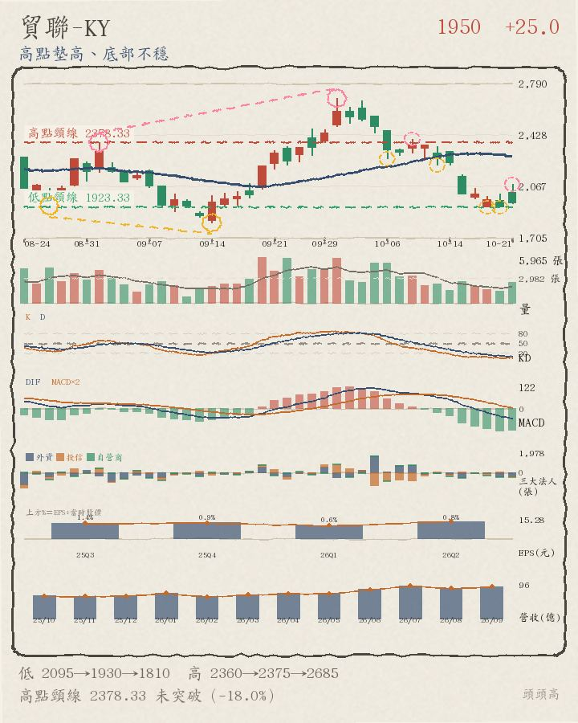
今天收紅、但成交量比平均少、跌破月線 2278.75，離高點頸線 2378.33 還差 18.0%，高點還在墊高（但底部沒同步墊高）。
- 月線位置：收盤 1950 在月線 2278.75 之下；5 日線 1976 也在月線之下（短均在下）；月線走平或向下、5 日線走平或向下
- 量能：成交量是 20 日均量的 0.76 倍，比 20 日均量少很多；收紅但量縮，量價背離
- 關鍵價位：高點頸線 2378.33 還沒突破，差 18.0%；最近轉折高點 2685（低於 27.4%）；最近轉折低點 1810（高於 7.7%）
- 轉折結構：高點 2360、2375、2685 墊高 13.8%（頭頭高），但低點 2095、1930、1810 沒有同步墊高；還沒確認的轉折低點 10-19 1920、10-20 1920；還沒確認的轉折高點 10-08 2400、10-21 2080（圖上虛線小圈）
區間或轉弱 成交金額 48.1 億・全榜第 48 名（上市第 38 名）
好條件 1/7：月線向上
不好條件 2/6：在月線之下、外資賣超
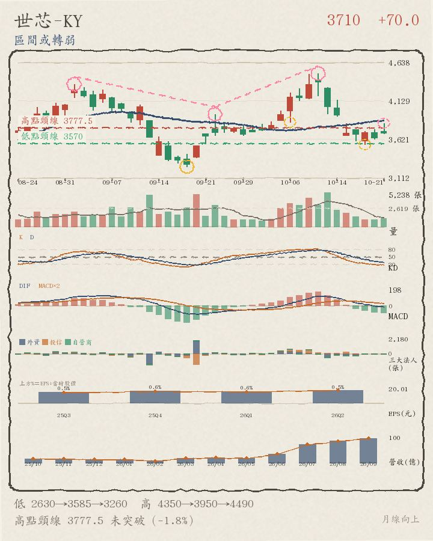
今天收紅、但成交量比平均少、跌破月線 3871，離高點頸線 3777.5 還差 1.8%，轉折還沒走出明顯方向。
- 月線位置：收盤 3710 在月線 3871 之下；5 日線 3691 也在月線之下（短均在下）；月線向上、5 日線走平或向下
- 量能：成交量是 20 日均量的 0.54 倍，比 20 日均量少很多；收紅但量縮，量價背離
- 關鍵價位：高點頸線 3777.5 還沒突破，差 1.8%；最近轉折高點 4490（低於 17.4%）；最近轉折低點 3260（高於 13.8%）
- 轉折結構：低點 2630、3585、3260 與高點 4350、3950、4490 都沒有明顯遞增，屬於區間震盪或轉弱；還沒確認的轉折低點 10-06 3850、10-19 3555；還沒確認的轉折高點 10-21 3835（圖上虛線小圈）
區間或轉弱 成交金額 45.54 億・全榜第 49 名（上市第 39 名）
好條件 3/7：站上月線、月線向上、量價攻擊（收紅＋大量）
不好條件 1/6：外資賣超
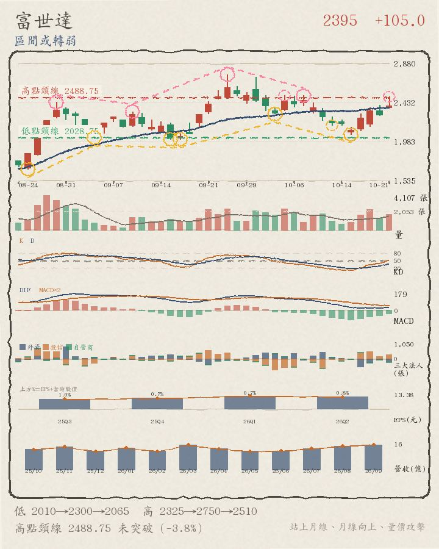
今天帶量收紅、站上月線 2373.25，離高點頸線 2488.75 還差 3.8%，轉折還沒走出明顯方向。
- 月線位置：收盤 2395 在月線 2373.25 之上；5 日線 2277 也在月線之下（短均在下）；月線向上、5 日線走平或向下
- 量能：成交量是 20 日均量的 1.12 倍，比 20 日均量大一些；收紅又量增，量價配合
- 關鍵價位：高點頸線 2488.75 還沒突破，差 3.8%；最近轉折高點 2510（低於 4.6%）；最近轉折低點 2065（高於 16.0%）
- 轉折結構：低點 2010、2300、2065 與高點 2325、2750、2510 都沒有明顯遞增，屬於區間震盪或轉弱；還沒確認的轉折低點 10-13 2170；還沒確認的轉折高點 10-05 2510、10-21 2500（圖上虛線小圈）
底部墊高、未過前高 成交金額 43.07 億・全榜第 51 名（上市第 40 名）
好條件 4/7：站上月線、月線向上、底底高、外資買超
不好條件 0/6：無
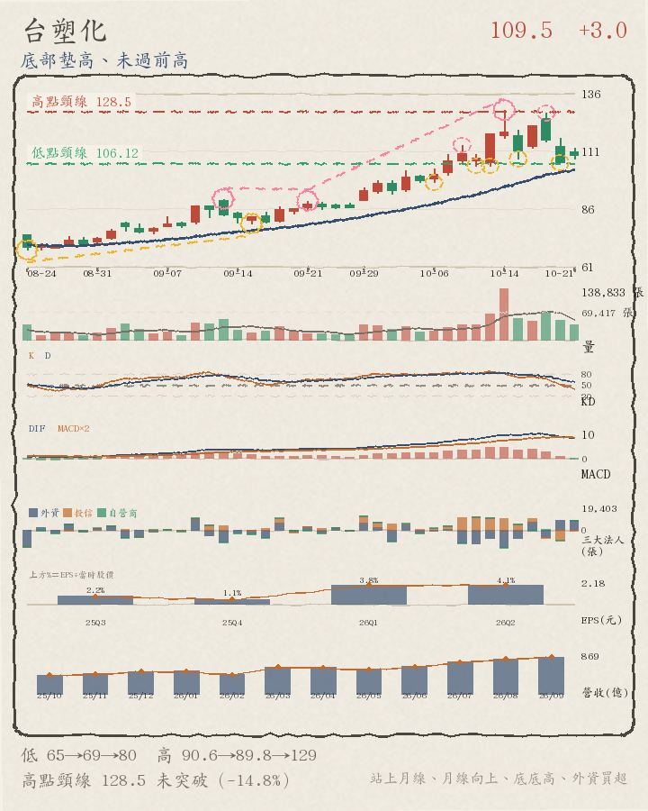
今天收紅、站上月線 103.33，離高點頸線 128.5 還差 14.8%，底部還在墊高（但高點沒同步創高）。
- 月線位置：收盤 109.5 在月線 103.33 之上；5 日線 113.2 也在月線之上（短均在上）；月線向上、5 日線向上
- 量能：成交量是 20 日均量的 0.96 倍，跟 20 日均量差不多
- 關鍵價位：高點頸線 128.5 還沒突破，差 14.8%；最近轉折高點 129（低於 15.1%）；最近轉折低點 80（高於 36.9%）
- 轉折結構：低點 65.4、68.6、80 墊高 22.3%（底底高），但高點 90.6、89.8、129 沒有同步創高；還沒確認的轉折低點 10-15 108、10-20 106.5；還沒確認的轉折高點 10-08 114、10-19 128（圖上虛線小圈）
區間或轉弱 成交金額 40.73 億・全榜第 54 名（上市第 41 名）
好條件 2/7：站上月線、月線向上
不好條件 3/6：相對大盤弱、今日下跌、外資賣超
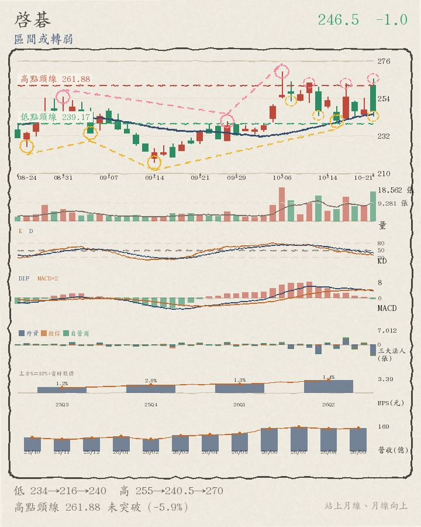
今天帶量收黑、站上月線 244.825，離高點頸線 261.88 還差 5.9%，轉折還沒走出明顯方向。
- 月線位置：收盤 246.5 在月線 244.825 之上；5 日線 247.3 也在月線之上（短均在上）；月線向上、5 日線走平或向下
- 量能：成交量是 20 日均量的 2.41 倍，比 20 日均量大不少；收黑卻量增，量價背離
- 關鍵價位：高點頸線 261.88 還沒突破，差 5.9%；最近轉折高點 270（低於 8.7%）；最近轉折低點 240.5（高於 2.5%）
- 轉折結構：低點 233.5、216、240.5 與高點 255、240.5、270 都沒有明顯遞增，屬於區間震盪或轉弱；還沒確認的轉折低點 10-13 244、10-21 243.5；還沒確認的轉折高點 10-16 263、10-21 266（圖上虛線小圈）
高點墊高、底部不穩 成交金額 39.96 億・全榜第 55 名（上市第 42 名）
好條件 2/7：頭頭高、外資買超
不好條件 2/6：在月線之下、月線下彎
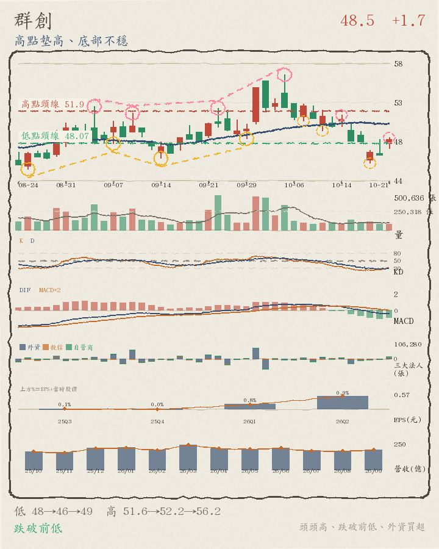
今天收紅、但成交量比平均少、跌破月線 50.375，跌破前一個轉折低點（高點頸線 51.9 還在收盤上方），高點還在墊高（但底部沒同步墊高）。
- 月線位置：收盤 48.5 在月線 50.375 之下；5 日線 47.76 也在月線之下（短均在下）；月線走平或向下、5 日線走平或向下
- 量能：成交量是 20 日均量的 0.42 倍，比 20 日均量少很多；收紅但量縮，量價背離
- 關鍵價位：高點頸線 51.9 還沒突破、還在收盤上方 6.6%；最近轉折高點 56.2（低於 13.7%）；最近轉折低點 48.55（低於 0.1%）
- 轉折結構：高點 51.6、52.2、56.2 墊高 8.9%（頭頭高），但低點 48、46.25、48.55 沒有同步墊高；還沒確認的轉折低點 10-12 49.5、10-19 45.65；還沒確認的轉折高點 10-14 51.4、10-21 48.7（圖上虛線小圈）
剛突破前高 成交金額 38.72 億・全榜第 56 名（上市第 43 名）
好條件 4/7：站上月線、月線向上、頭頭高、量價攻擊（收紅＋大量）
不好條件 1/6：外資賣超
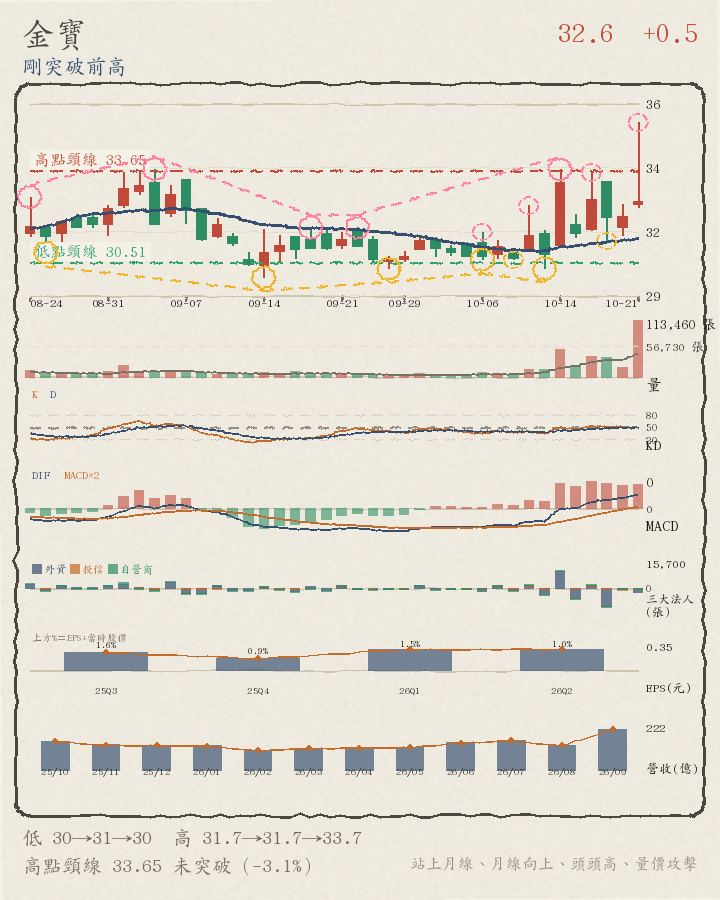
今天帶量收紅、站上月線 31.345，離高點頸線 33.65 還差 3.1%，高點還在墊高（但底部沒同步墊高）。
- 月線位置：收盤 32.6 在月線 31.345 之上；5 日線 32.18 也在月線之上（短均在上）；月線向上、5 日線向上
- 量能：成交量是 20 日均量的 8.05 倍，比 20 日均量大不少；收紅又量增，量價配合
- 關鍵價位：高點頸線 33.65 還沒突破，差 3.1%；最近轉折高點 33.7（低於 3.3%）；最近轉折低點 30.3（高於 7.6%）
- 轉折結構：高點 31.7、31.7、33.7 墊高 4.7%（頭頭高），但低點 30.3、30.6、30.3 沒有同步墊高；還沒確認的轉折低點 10-08 30.6、10-19 31.25；還沒確認的轉折高點 10-16 33.6、10-21 35.3（圖上虛線小圈）
區間或轉弱 成交金額 37.23 億・全榜第 57 名（上市第 44 名）
好條件 4/7：站上月線、月線向上、外資買超、量價攻擊（收紅＋大量）
不好條件 0/6：無
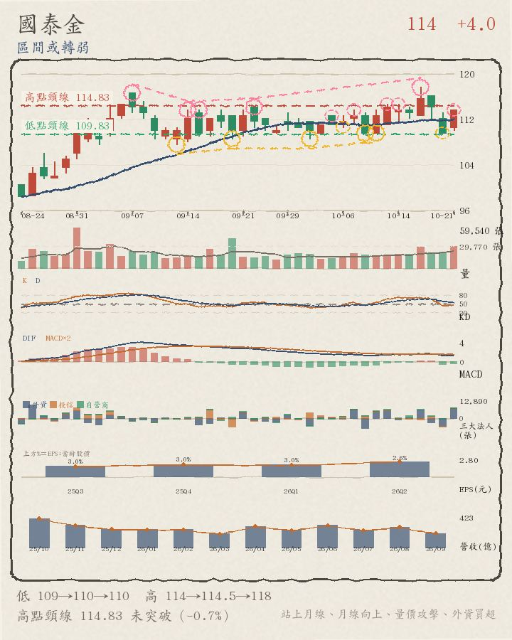
今天帶量收紅、站上月線 112.375，離高點頸線 114.83 還差 0.7%，轉折還沒走出明顯方向。
- 月線位置：收盤 114 在月線 112.375 之上；5 日線 113.6 也在月線之上（短均在上）；月線向上、5 日線向上
- 量能：成交量是 20 日均量的 1.61 倍，比 20 日均量大不少；收紅又量增，量價配合
- 關鍵價位：高點頸線 114.83 還沒突破，差 0.7%；最近轉折高點 118（低於 3.4%）；最近轉折低點 110（高於 3.6%）
- 轉折結構：低點 109、110、110 與高點 114、114.5、118 都沒有明顯遞增，屬於區間震盪或轉弱；還沒確認的轉折低點 10-06 111、10-20 110；還沒確認的轉折高點 10-14 115、10-21 114（圖上虛線小圈）
區間或轉弱 成交金額 36.6 億・全榜第 58 名（上市第 45 名）
好條件 2/7：月線向上、量價攻擊（收紅＋大量）
不好條件 2/6：在月線之下、外資賣超
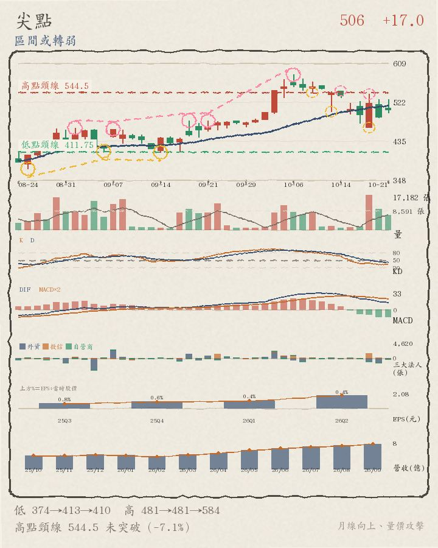
今天帶量收紅、跌破月線 514.457，離高點頸線 544.5 還差 7.1%，轉折還沒走出明顯方向。
- 月線位置：收盤 506 在月線 514.457 之下；5 日線 503 也在月線之下（短均在下）；月線向上、5 日線走平或向下
- 量能：成交量是 20 日均量的 1.26 倍，比 20 日均量大不少；收紅又量增，量價配合
- 關鍵價位：高點頸線 544.5 還沒突破，差 7.1%；最近轉折高點 584（低於 13.4%）；最近轉折低點 410.5（高於 23.3%）
- 轉折結構：低點 373.5、413、410.5 與高點 481、481、584 都沒有明顯遞增，屬於區間震盪或轉弱；還沒確認的轉折低點 10-13 501、10-19 466；還沒確認的轉折高點 10-14 548、10-19 541（圖上虛線小圈）
高點墊高、底部不穩 成交金額 36 億・全榜第 59 名（上市第 46 名）
好條件 5/7：站上月線、月線向上、頭頭高、突破頸線、外資買超
不好條件 0/6：無
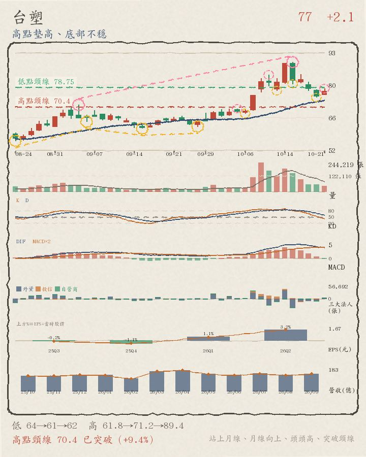
今天收紅、但成交量比平均少、站上月線 73.15，已站上高點頸線 70.4，高點還在墊高（但底部沒同步墊高）。
- 月線位置：收盤 77 在月線 73.15 之上；5 日線 78.78 也在月線之上（短均在上）；月線向上、5 日線走平或向下
- 量能：成交量是 20 日均量的 0.62 倍，比 20 日均量少很多；收紅但量縮，量價背離
- 關鍵價位：高點頸線 70.4 已站上；最近轉折高點 89.4（低於 13.9%）；最近轉折低點 62（高於 24.2%）
- 轉折結構：高點 61.8、71.2、89.4 墊高 44.7%（頭頭高），但低點 64.1、61.2、62 沒有同步墊高；還沒確認的轉折低點 10-15 80.2、10-20 74.4；還沒確認的轉折高點 10-12 84、10-21 78.2（圖上虛線小圈）
區間或轉弱 成交金額 34.87 億・全榜第 61 名（上市第 47 名）
好條件 4/7：站上月線、月線向上、突破頸線、外資買超
不好條件 0/6：無
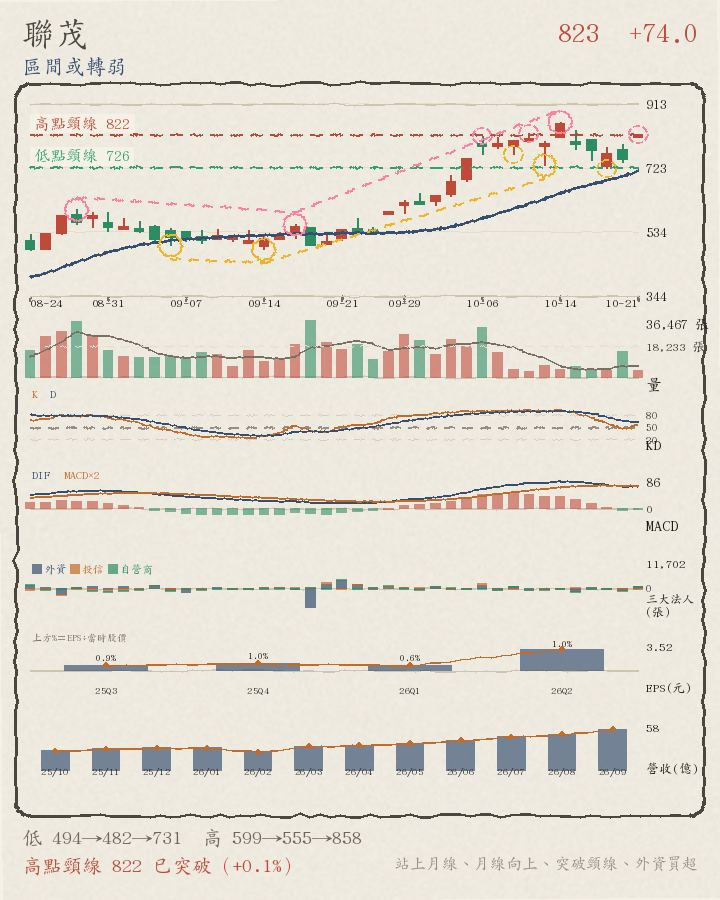
今天收紅、但成交量比平均少、站上月線 715.2，已站上高點頸線 822，轉折還沒走出明顯方向。
- 月線位置：收盤 823 在月線 715.2 之上；5 日線 782.4 也在月線之上（短均在上）；月線向上、5 日線走平或向下
- 量能：成交量是 20 日均量的 0.29 倍，比 20 日均量少很多；收紅但量縮，量價背離
- 關鍵價位：高點頸線 822 已站上；最近轉折高點 858（低於 4.1%）；最近轉折低點 731（高於 12.6%）
- 轉折結構：低點 493.5、482、731 與高點 599、555、858 都沒有明顯遞增，屬於區間震盪或轉弱；還沒確認的轉折低點 10-08 763、10-19 721；還沒確認的轉折高點 10-12 825、10-21 823（圖上虛線小圈）
高點墊高、底部不穩 成交金額 34.25 億・全榜第 62 名（上市第 48 名）
好條件 5/7：站上月線、月線向上、頭頭高、突破頸線、量價攻擊（收紅＋大量）
不好條件 1/6：外資賣超
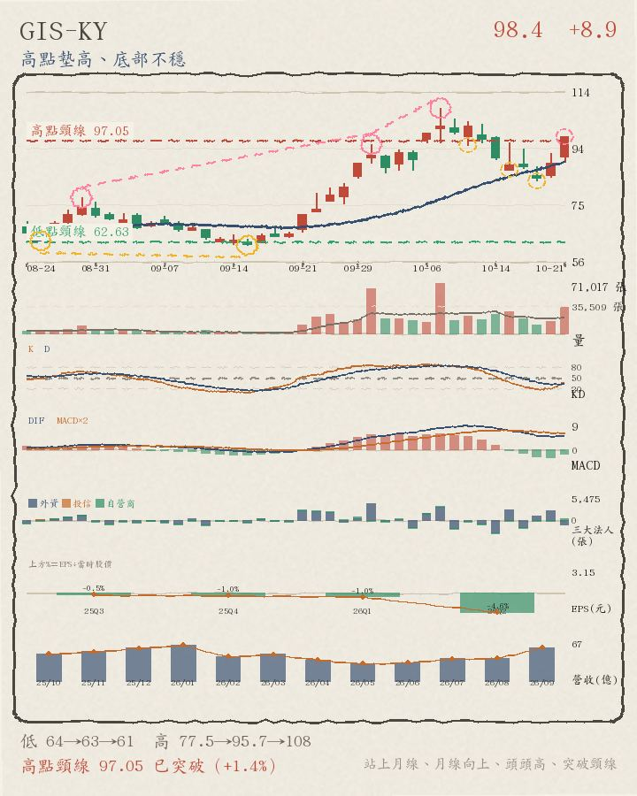
今天帶量收紅、站上月線 89.975，已站上高點頸線 97.05，高點還在墊高（但底部沒同步墊高）。
- 月線位置：收盤 98.4 在月線 89.975 之上；5 日線 89.82 也在月線之下（短均在下）；月線向上、5 日線走平或向下
- 量能：成交量是 20 日均量的 1.53 倍，比 20 日均量大不少；收紅又量增，量價配合
- 關鍵價位：高點頸線 97.05 已站上；最近轉折高點 108（低於 8.9%）；最近轉折低點 61.4（高於 60.3%）
- 轉折結構：高點 77.5、95.7、108 墊高 39.4%（頭頭高），但低點 63.6、62.9、61.4 沒有同步墊高；還沒確認的轉折低點 10-15 87.1、10-19 83.3；還沒確認的轉折高點 10-21 98.4（圖上虛線小圈）
區間或轉弱 成交金額 34.08 億・全榜第 63 名（上市第 49 名）
好條件 1/7：外資買超
不好條件 2/6：在月線之下、月線下彎
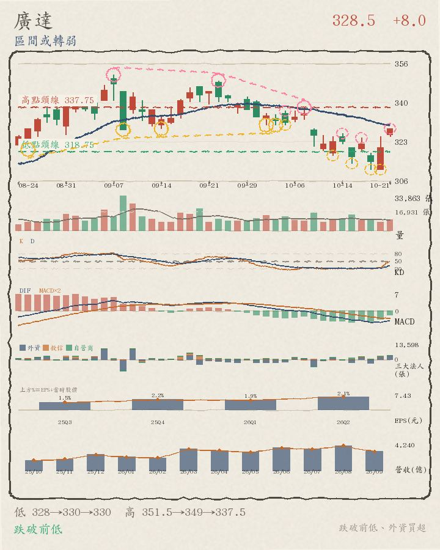
今天收紅、但成交量比平均少、跌破月線 329.875，跌破前一個轉折低點（高點頸線 337.75 還在收盤上方），轉折還沒走出明顯方向。
- 月線位置：收盤 328.5 在月線 329.875 之下；5 日線 320.4 也在月線之下（短均在下）；月線走平或向下、5 日線走平或向下
- 量能：成交量是 20 日均量的 0.91 倍，比 20 日均量少一些；收紅但量縮，量價背離
- 關鍵價位：高點頸線 337.75 還沒突破、還在收盤上方 2.7%；最近轉折高點 337.5（低於 2.7%）；最近轉折低點 330（低於 0.5%）
- 轉折結構：低點 328.5、330、330 與高點 351.5、349、337.5 都沒有明顯遞增，屬於區間震盪或轉弱；還沒確認的轉折低點 10-19 311、10-20 311；還沒確認的轉折高點 10-16 324.5、10-21 328.5（圖上虛線小圈）
區間或轉弱 成交金額 32.74 億・全榜第 64 名（上市第 50 名）
好條件 1/7：外資買超
不好條件 2/6：在月線之下、月線下彎
今天收紅、但成交量比平均少、跌破月線 71.105，跌破前一個轉折低點（高點頸線 70.45 還在收盤上方），轉折還沒走出明顯方向。
- 月線位置：收盤 66.2 在月線 71.105 之下；5 日線 65.82 也在月線之下（短均在下）；月線走平或向下、5 日線走平或向下
- 量能：成交量是 20 日均量的 0.46 倍，比 20 日均量少很多；收紅但量縮，量價背離
- 關鍵價位：高點頸線 70.45 還沒突破、還在收盤上方 6.0%；最近轉折高點 78.1（低於 15.2%）；最近轉折低點 70.5（低於 6.1%）
- 轉折結構：低點 67、66.7、70.5 與高點 75.3、74.7、78.1 都沒有明顯遞增，屬於區間震盪或轉弱；還沒確認的轉折低點 10-15 66、10-19 63；還沒確認的轉折高點 10-16 69.4、10-21 66.6（圖上虛線小圈）
高點墊高、底部不穩 成交金額 308.6 億・全榜第 4 名（上櫃第 1 名）
好條件 2/7：月線向上、頭頭高
不好條件 5/6：在月線之下、相對大盤弱、今日下跌、收盤跌破前一日低點、外資賣超
今天帶量收黑、跌破月線 1601.5，離高點頸線 1786.67 還差 16.0%，高點還在墊高（但底部沒同步墊高）。
- 月線位置：收盤 1500 在月線 1601.5 之下；5 日線 1584 也在月線之下（短均在下）；月線向上、5 日線走平或向下
- 量能：成交量是 20 日均量的 2.20 倍，比 20 日均量大不少；收黑卻量增，量價背離
- 關鍵價位：高點頸線 1786.67 還沒突破，差 16.0%；最近轉折高點 1835（低於 18.3%）；最近轉折低點 1275（高於 17.6%）
- 轉折結構：高點 1430、1460、1835 墊高 28.3%（頭頭高），但低點 1395、1295、1275 沒有同步墊高；還沒確認的轉折低點 10-19 1500、10-21 1475；還沒確認的轉折高點 10-14 1745、10-20 1650（圖上虛線小圈）
底部墊高、突破前高 成交金額 208.25 億・全榜第 7 名（上櫃第 2 名）
好條件 5/7：站上月線、月線向上、底底高、頭頭高、突破頸線
不好條件 4/6：相對大盤弱、今日下跌、收盤跌破前一日低點、外資賣超
今天帶量收黑、站上月線 129.525，已站上高點頸線 138.33，轉折結構仍是底底高＋頭頭高。
- 月線位置：收盤 147 在月線 129.525 之上；5 日線 144.5 也在月線之上（短均在上）；月線向上、5 日線向上
- 量能：成交量是 20 日均量的 1.77 倍，比 20 日均量大不少；收黑卻量增，量價背離
- 關鍵價位：高點頸線 138.33 已站上；最近轉折高點 129.5（高於 13.5%）；最近轉折低點 124（高於 18.5%）
- 轉折結構：低點 111、113、124 一路墊高 11.7%、高點 89.4284、135、129.5 也一路墊高 24.7%，是底底高＋頭頭高；還沒確認的轉折低點 10-15 125、10-21 145；還沒確認的轉折高點 10-14 140.5、10-20 161.5（圖上虛線小圈）
上升趨勢（底底高＋頭頭高） 成交金額 103.4 億・全榜第 28 名（上櫃第 3 名）
好條件 5/7：站上月線、月線向上、底底高、頭頭高、突破頸線
不好條件 4/6：相對大盤弱、今日下跌、收盤跌破前一日低點、外資賣超
今天帶量收黑、站上月線 220.6，已站上高點頸線 142.25，轉折結構仍是底底高＋頭頭高。
- 月線位置：收盤 241.5 在月線 220.6 之上；5 日線 243.3 也在月線之上（短均在上）；月線向上、5 日線向上
- 量能：成交量是 20 日均量的 5.85 倍，比 20 日均量大不少；收黑卻量增，量價背離
- 關鍵價位：高點頸線 142.25 已站上；最近轉折高點 280.5（低於 13.9%）；最近轉折低點 213.5（高於 13.1%）
- 轉折結構：低點 123.5、172.5、213.5 一路墊高 72.9%、高點 144、201、280.5 也一路墊高 94.8%，是底底高＋頭頭高；還沒確認的轉折低點 10-19 217、10-21 241.5；還沒確認的轉折高點 10-12 250.5、10-21 293.5（圖上虛線小圈）
區間或轉弱 成交金額 102.5 億・全榜第 29 名（上櫃第 4 名）
好條件 3/7：月線向上、突破頸線、外資買超
不好條件 1/6：在月線之下
今天收紅、但成交量比平均少、跌破月線 534.775，已站上高點頸線 485，轉折還沒走出明顯方向。
- 月線位置：收盤 512 在月線 534.775 之下；5 日線 494.4 也在月線之下（短均在下）；月線向上、5 日線走平或向下
- 量能：成交量是 20 日均量的 0.82 倍，比 20 日均量少很多；收紅但量縮，量價背離
- 關鍵價位：高點頸線 485 已站上；最近轉折高點 630（低於 18.7%）；最近轉折低點 482（高於 6.2%）
- 轉折結構：低點 438.5、420、482 與高點 492、478、630 都沒有明顯遞增，屬於區間震盪或轉弱；還沒確認的轉折低點 10-13 522、10-19 454；還沒確認的轉折高點 10-14 570、10-21 522（圖上虛線小圈）
高點墊高、底部不穩 成交金額 83.01 億・全榜第 35 名（上櫃第 5 名）
好條件 2/7：月線向上、頭頭高
不好條件 4/6：在月線之下、相對大盤弱、今日下跌、外資賣超
今天帶量收黑、跌破月線 1511.5，跌破前一個轉折低點（高點頸線 1510 還在收盤上方），高點還在墊高（但底部沒同步墊高）。
- 月線位置：收盤 1375 在月線 1511.5 之下；5 日線 1397 也在月線之下（短均在下）；月線向上、5 日線走平或向下
- 量能：成交量是 20 日均量的 1.62 倍，比 20 日均量大不少；收黑卻量增，量價背離
- 關鍵價位：高點頸線 1510 還沒突破、還在收盤上方 8.9%；最近轉折高點 1750（低於 21.4%）；最近轉折低點 1395（低於 1.4%）
- 轉折結構：高點 1080、1505、1750 墊高 62.0%（頭頭高），但低點 1240、1480、1395 沒有同步墊高；還沒確認的轉折低點 10-19 1320、10-21 1340；還沒確認的轉折高點 10-08 1570、10-21 1515（圖上虛線小圈）
區間或轉弱 成交金額 74.79 億・全榜第 38 名（上櫃第 6 名）
好條件 0/7：無
不好條件 3/6：在月線之下、月線下彎、外資賣超
今天收紅、但成交量比平均少、跌破月線 1018.3，離高點頸線 1018.75 還差 13.6%，轉折還沒走出明顯方向。
- 月線位置：收盤 880 在月線 1018.3 之下；5 日線 886.2 也在月線之下（短均在下）；月線走平或向下、5 日線走平或向下
- 量能：成交量是 20 日均量的 0.60 倍，比 20 日均量少很多；收紅但量縮，量價背離
- 關鍵價位：高點頸線 1018.75 還沒突破，差 13.6%；最近轉折高點 1260（低於 30.2%）；最近轉折低點 872（高於 0.9%）
- 轉折結構：低點 931、875、872 與高點 1015、1010、1260 都沒有明顯遞增，屬於區間震盪或轉弱；還沒確認的轉折低點 10-06 1145、10-19 838；還沒確認的轉折高點 10-21 903（圖上虛線小圈）
底部墊高、未過前高 成交金額 74.6 億・全榜第 39 名（上櫃第 7 名）
好條件 2/7：底底高、量價攻擊（收紅＋大量）
不好條件 3/6：在月線之下、月線下彎、外資賣超
今天帶量收紅、跌破月線 504.95，離高點頸線 571 還差 15.6%，底部還在墊高（但高點沒同步創高）。
- 月線位置：收盤 482 在月線 504.95 之下；5 日線 473.8 也在月線之下（短均在下）；月線走平或向下、5 日線走平或向下
- 量能：成交量是 20 日均量的 1.41 倍，比 20 日均量大不少；收紅又量增，量價配合
- 關鍵價位：高點頸線 571 還沒突破，差 15.6%；最近轉折高點 578（低於 16.6%）；最近轉折低點 477（高於 1.0%）
- 轉折結構：低點 399、469.5、477 墊高 19.5%（底底高），但高點 564、535、578 沒有同步創高；還沒確認的轉折低點 10-15 453、10-19 447.5；還沒確認的轉折高點 10-20 510（圖上虛線小圈）
剛突破前高 成交金額 72.2 億・全榜第 40 名（上櫃第 8 名）
好條件 4/7：站上月線、月線向上、頭頭高、外資買超
不好條件 2/6：相對大盤弱、今日下跌
今天帶量收黑、站上月線 193.125，離高點頸線 214.25 還差 0.1%，高點還在墊高（但底部沒同步墊高）。
- 月線位置：收盤 214 在月線 193.125 之上；5 日線 208.4 也在月線之上（短均在上）；月線向上、5 日線向上
- 量能：成交量是 20 日均量的 5.69 倍，比 20 日均量大不少；收黑卻量增，量價背離
- 關鍵價位：高點頸線 214.25 還沒突破，差 0.1%；最近轉折高點 215（低於 0.5%）；最近轉折低點 168（高於 27.4%）
- 轉折結構：高點 203.5、195、215 墊高 13.7%（頭頭高），但低點 156、176、168 沒有同步墊高；還沒確認的轉折低點 10-19 184、10-21 207；還沒確認的轉折高點 10-14 213.5、10-21 244.5（圖上虛線小圈）
高點墊高、底部不穩 成交金額 53.88 億・全榜第 46 名（上櫃第 9 名）
好條件 5/7：站上月線、月線向上、頭頭高、外資買超、量價攻擊（收紅＋大量）
不好條件 0/6：無
今天收紅、站上月線 257.15，離高點頸線 272.75 還差 2.8%，高點還在墊高（但底部沒同步墊高）。
- 月線位置：收盤 265 在月線 257.15 之上；5 日線 259.3 也在月線之上（短均在上）；月線向上、5 日線走平或向下
- 量能：成交量是 20 日均量的 1.02 倍，跟 20 日均量差不多
- 關鍵價位：高點頸線 272.75 還沒突破，差 2.8%；最近轉折高點 291.5（低於 9.1%）；最近轉折低點 238（高於 11.3%）
- 轉折結構：高點 251.5、289.5、291.5 墊高 15.9%（頭頭高），但低點 220、238、238 沒有同步墊高；還沒確認的轉折低點 10-08 243、10-19 241.5；還沒確認的轉折高點 10-12 277、10-21 268.5（圖上虛線小圈）
底部墊高、未過前高 成交金額 52.01 億・全榜第 47 名（上櫃第 10 名）
好條件 5/7：站上月線、月線向上、底底高、外資買超、量價攻擊（收紅＋大量）
不好條件 0/6：無
今天帶量收紅、站上月線 466.625，離高點頸線 497 還差 5.3%，底部還在墊高（但高點沒同步創高）。
- 月線位置：收盤 470.5 在月線 466.625 之上；5 日線 444.5 也在月線之下（短均在下）；月線向上、5 日線走平或向下
- 量能：成交量是 20 日均量的 1.15 倍，比 20 日均量大不少；收紅又量增，量價配合
- 關鍵價位：高點頸線 497 還沒突破，差 5.3%；最近轉折高點 530（低於 11.2%）；最近轉折低點 436.5（高於 7.8%）
- 轉折結構：低點 289、407、436.5 墊高 51.0%（底底高），但高點 496、487、530 沒有同步創高；還沒確認的轉折低點 10-13 444、10-19 399；還沒確認的轉折高點 10-14 508、10-21 470.5（圖上虛線小圈）
高點墊高、底部不穩 成交金額 43.68 億・全榜第 50 名（上櫃第 11 名）
好條件 1/7：頭頭高
不好條件 3/6：在月線之下、月線下彎、外資賣超
今天收紅、但成交量比平均少、跌破月線 2776.5，離高點頸線 2931.67 還差 10.5%，高點還在墊高（但底部沒同步墊高）。
- 月線位置：收盤 2625 在月線 2776.5 之下；5 日線 2574 也在月線之下（短均在下）；月線走平或向下、5 日線走平或向下
- 量能：成交量是 20 日均量的 0.58 倍，比 20 日均量少很多；收紅但量縮，量價背離
- 關鍵價位：高點頸線 2931.67 還沒突破，差 10.5%；最近轉折高點 3210（低於 18.2%）；最近轉折低點 2585（高於 1.5%）
- 轉折結構：高點 2930、2950、3210 墊高 9.6%（頭頭高），但低點 1450、2650、2585 沒有同步墊高；還沒確認的轉折低點 10-19 2385；還沒確認的轉折高點 10-14 2915、10-21 2640（圖上虛線小圈）
底部墊高、未過前高 成交金額 42.55 億・全榜第 52 名（上櫃第 12 名）
好條件 3/7：月線向上、底底高、外資買超
不好條件 1/6：在月線之下
今天收紅、但成交量比平均少、跌破月線 217.775，離高點頸線 234 還差 8.8%，底部還在墊高（但高點沒同步創高）。
- 月線位置：收盤 213.5 在月線 217.775 之下；5 日線 209.2 也在月線之下（短均在下）；月線向上、5 日線走平或向下
- 量能：成交量是 20 日均量的 0.55 倍，比 20 日均量少很多；收紅但量縮，量價背離
- 關鍵價位：高點頸線 234 還沒突破，差 8.8%；最近轉折高點 238（低於 10.3%）；最近轉折低點 211（高於 1.2%）
- 轉折結構：低點 171、208、211 墊高 23.4%（底底高），但高點 233、238、238 沒有同步創高；還沒確認的轉折低點 10-13 216.5、10-19 194.5；還沒確認的轉折高點 10-14 233、10-21 217（圖上虛線小圈）
區間或轉弱 成交金額 42.02 億・全榜第 53 名（上櫃第 13 名）
好條件 0/7：無
不好條件 3/6：在月線之下、月線下彎、外資賣超
今天收紅、跌破月線 18198.5，離高點頸線 16630 還差 0.7%，轉折還沒走出明顯方向。
- 月線位置：收盤 16515 在月線 18198.5 之下；5 日線 16164 也在月線之下（短均在下）；月線走平或向下、5 日線走平或向下
- 量能：成交量是 20 日均量的 0.99 倍，跟 20 日均量差不多
- 關鍵價位：高點頸線 16630 還沒突破，差 0.7%；最近轉折高點 18465（低於 10.6%）；最近轉折低點 15975（高於 3.4%）
- 轉折結構：低點 14600、17170、15975 與高點 21800、19895、18465 都沒有明顯遞增，屬於區間震盪或轉弱；還沒確認的轉折低點 10-15 15750、10-19 15500；還沒確認的轉折高點 10-16 16620、10-21 16640（圖上虛線小圈）
區間或轉弱 成交金額 35.89 億・全榜第 60 名（上櫃第 14 名）
好條件 1/7：外資買超
不好條件 2/6：在月線之下、月線下彎
今天收紅、但成交量比平均少、跌破月線 2039，跌破前一個轉折低點（高點頸線 1947.5 還在收盤上方），轉折還沒走出明顯方向。
- 月線位置：收盤 1930 在月線 2039 之下；5 日線 1868 也在月線之下（短均在下）；月線走平或向下、5 日線走平或向下
- 量能：成交量是 20 日均量的 0.65 倍，比 20 日均量少很多；收紅但量縮，量價背離
- 關鍵價位：高點頸線 1947.5 還沒突破、還在收盤上方 0.9%；最近轉折高點 2350（低於 17.9%）；最近轉折低點 2080（低於 7.2%）
- 轉折結構：低點 1970、1900、2080 與高點 2195、2160、2350 都沒有明顯遞增，屬於區間震盪或轉弱；還沒確認的轉折低點 10-15 1800、10-19 1785；還沒確認的轉折高點 10-16 1950、10-21 1945（圖上虛線小圈）
區間或轉弱 成交金額 29.57 億・全榜第 65 名（上櫃第 15 名）
好條件 0/7：無
不好條件 3/6：在月線之下、月線下彎、外資賣超
今天收紅、但成交量比平均少、跌破月線 120.775，離高點頸線 138.5 還差 19.9%，轉折還沒走出明顯方向。
- 月線位置：收盤 111 在月線 120.775 之下；5 日線 108.8 也在月線之下（短均在下）；月線走平或向下、5 日線走平或向下
- 量能：成交量是 20 日均量的 0.37 倍，比 20 日均量少很多；收紅但量縮，量價背離
- 關鍵價位：高點頸線 138.5 還沒突破，差 19.9%；最近轉折高點 140（低於 20.7%）；最近轉折低點 100（高於 11.0%）
- 轉折結構：低點 103.5、104、100 與高點 125、140、140 都沒有明顯遞增，屬於區間震盪或轉弱；還沒確認的轉折低點 10-13 113.5、10-19 103.5；還沒確認的轉折高點 10-07 135.5、10-21 112.5（圖上虛線小圈）
區間或轉弱 成交金額 28.89 億・全榜第 66 名（上櫃第 16 名）
好條件 1/7：外資買超
不好條件 2/6：在月線之下、月線下彎
今天收紅、但成交量比平均少、跌破月線 5421，離高點頸線 5842.5 還差 14.3%，轉折還沒走出明顯方向。
- 月線位置：收盤 5005 在月線 5421 之下；5 日線 5129 也在月線之下（短均在下）；月線走平或向下、5 日線走平或向下
- 量能：成交量是 20 日均量的 0.61 倍，比 20 日均量少很多；收紅但量縮，量價背離
- 關鍵價位：高點頸線 5842.5 還沒突破，差 14.3%；最近轉折高點 6160（低於 18.8%）；最近轉折低點 4995（高於 0.2%）
- 轉折結構：低點 5365、5090、4995 與高點 6060、5860、6160 都沒有明顯遞增，屬於區間震盪或轉弱；還沒確認的轉折低點 10-16 4950、10-20 4865；還沒確認的轉折高點 10-07 5725、10-20 5370（圖上虛線小圈）
區間或轉弱 成交金額 25.51 億・全榜第 67 名（上櫃第 17 名）
好條件 1/7：站上月線
不好條件 2/6：月線下彎、外資賣超
今天收紅、但成交量比平均少、站上月線 3209.5，離高點頸線 3347.5 還差 3.5%，轉折還沒走出明顯方向。
- 月線位置：收盤 3230 在月線 3209.5 之上；5 日線 3105 也在月線之下（短均在下）；月線走平或向下、5 日線走平或向下
- 量能：成交量是 20 日均量的 0.89 倍，比 20 日均量少一些；收紅但量縮，量價背離
- 關鍵價位：高點頸線 3347.5 還沒突破，差 3.5%；最近轉折高點 3580（低於 9.8%）；最近轉折低點 2825（高於 14.3%）
- 轉折結構：低點 2960、3000、2825 與高點 3935、3775、3580 都沒有明顯遞增，屬於區間震盪或轉弱；還沒確認的轉折高點 10-14 3385、10-20 3310（圖上虛線小圈）
區間或轉弱 成交金額 22.39 億・全榜第 68 名（上櫃第 18 名）
好條件 1/7：月線向上
不好條件 3/6：在月線之下、相對大盤弱、外資賣超
今天收紅、但成交量比平均少、跌破月線 1392.75，離高點頸線 1440 還差 7.6%，轉折還沒走出明顯方向。
- 月線位置：收盤 1330 在月線 1392.75 之下；5 日線 1371 也在月線之下（短均在下）；月線向上、5 日線走平或向下
- 量能：成交量是 20 日均量的 0.60 倍，比 20 日均量少很多；收紅但量縮，量價背離
- 關鍵價位：高點頸線 1440 還沒突破，差 7.6%；最近轉折高點 1680（低於 20.8%）；最近轉折低點 1180（高於 12.7%）
- 轉折結構：低點 1185、1180、1180 與高點 1435、1270、1680 都沒有明顯遞增，屬於區間震盪或轉弱；還沒確認的轉折低點 10-08 1490、10-20 1310；還沒確認的轉折高點 10-06 1590、10-20 1430（圖上虛線小圈）
上升趨勢（底底高＋頭頭高） 成交金額 22.2 億・全榜第 69 名（上櫃第 19 名）
好條件 3/7：底底高、頭頭高、外資買超
不好條件 5/6：在月線之下、月線下彎、相對大盤弱、今日下跌、收盤跌破前一日低點
今天收黑、成交量也比平均少、跌破月線 2979，離高點頸線 2761.67 還差 6.2%，轉折結構仍是底底高＋頭頭高。
- 月線位置：收盤 2590 在月線 2979 之下；5 日線 2669 也在月線之下（短均在下）；月線走平或向下、5 日線走平或向下
- 量能：成交量是 20 日均量的 0.71 倍，比 20 日均量少很多
- 關鍵價位：高點頸線 2761.67 還沒突破，差 6.2%；最近轉折高點 3635（低於 28.7%）；最近轉折低點 2530（高於 2.4%）
- 轉折結構：低點 1995、2090、2530 一路墊高 26.8%、高點 2720、2875、3635 也一路墊高 33.6%，是底底高＋頭頭高；還沒確認的轉折低點 10-19 2625、10-21 2580；還沒確認的轉折高點 10-16 2795、10-20 2770（圖上虛線小圈）
區間或轉弱 成交金額 21.67 億・全榜第 70 名（上櫃第 20 名）
好條件 0/7：無
不好條件 3/6：在月線之下、月線下彎、外資賣超
今天收紅、但成交量比平均少、跌破月線 305.404，跌破前一個轉折低點（高點頸線 301.44 還在收盤上方），轉折還沒走出明顯方向。
- 月線位置：收盤 284.5 在月線 305.404 之下；5 日線 283.851 也在月線之下（短均在下）；月線走平或向下、5 日線走平或向下
- 量能：成交量是 20 日均量的 0.61 倍，比 20 日均量少很多；收紅但量縮，量價背離
- 關鍵價位：高點頸線 301.44 還沒突破、還在收盤上方 5.6%；最近轉折高點 302.128（低於 5.8%）；最近轉折低點 302.128（低於 5.8%）
- 轉折結構：低點 302.128、302.128、302.128 與高點 302.128、302.128、302.128 都沒有明顯遞增，屬於區間震盪或轉弱；還沒確認的轉折低點 10-15 302.128、10-20 248；還沒確認的轉折高點 10-12 302.128、10-20 298（圖上虛線小圈）